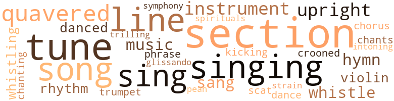
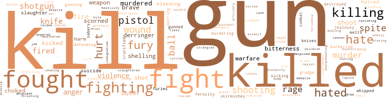
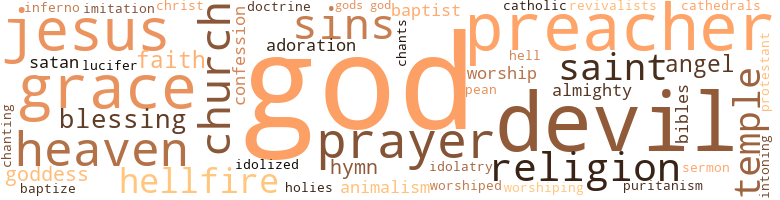

Benton's Row, by Yerby, Frank (1954)
90 music-related terms matched in this text.
Most frequent terms in this topic: section (10); tune (8); singing (6); quavered (5); line (4)
chant.n.01
Definition: a repetitive song in which as many syllables as necessary are assigned to a single tone
| word | sentence |
|---|---|
| chants | Here in their new home of bayous over which the morning haze brooded , of fields shimmering in the wash of sun , under the blue immensity of sky , they had had to go back again , to break out of their prison of puritanism , give vent to the passion , force , joy boiling within them , take away , in fact the religion from gentle Jesus who had never suited them , and give it back to Astarte , who did ; putting it once more upon its true , ancient basis of carnal lusts , reviving the voluptuous joys wisely retained by the Mother Church of reliving the cherished sin once more in the telling , combining it with back-country brag , to the tune of hammering chants having all the beat and cadence of tomtoms , to the staccato of handclapping , the pounding of two hundred feet in tune upon the earthen floor , punctuated by the shuddering cries of women caught up in an ecstasy truly sexual , set off by the contrapuntal bass thunder of male shouting . |
chorus.n.01
Definition: any utterance produced simultaneously by a group
| word | sentence |
|---|---|
| chorus | Off-stage noises , a few spear-bearers in the wings clashing their counterfeit weapons to represent an army , the Greek chorus rolling ponderous antistrophes about disasters unheard , unseen --- these penetrate a man 's consciousness dimly , if at all . |
cornet.n.01
Definition: a brass musical instrument with a brilliant tone; has a narrow tube and a flared bell and is played by means of valves
| word | sentence |
|---|---|
| trumpet | There were the days that crept up out of the bayou mist , and stole into night going down in swamp haze to the sound of a whimpering wind ; there were the days that came up in trumpet blasts of sun and flamed down a red sky into darkness heralded by the wild fowls ' honking . |
croon.v.01
Definition: sing softly
| word | sentence |
|---|---|
| crooned | " Poor little boy , " she crooned , " poor scairt little boy . |
dance.n.01
Definition: an artistic form of nonverbal communication
| word | sentence |
|---|---|
| dance | Exploding into violence , into action only in the hunt , the square dance , the barroom brawl . |
dance.v.03
Definition: skip, leap, or move up and down or sideways
| word | sentence |
|---|---|
| danced | So a man went and worked all day and half the night helping a neighbor get his barn up and drank his homemade mash , and danced to the fiddler 's tune afterwards and sparked all the girls . |
| danced | Randy stared at him , his gaze so level and still , that Wade 's pale little eyes danced in his fat face , trying to avoid meeting it . |
glissando.n.01
Definition: a rapid series of ascending or descending notes on the musical scale
| word | sentence |
|---|---|
| glissando | The noisy babble inside continued for a half-second longer , during which lie heard his name spoken , combined with picturesque invectives , until the nods , nudges , gestures had run from man to man ; and then the silence was there before him after the words had run down a tinkling little glissando into stillness . |
hymn.n.01
Definition: a song of praise (to God or to a saint or to a nation)
| word | sentence |
|---|---|
| hymn | The hymn soared forth , the congregation shaking the tent with their fervor . |
| hymn | It 's like this , Sary-gal , he explained wordlessly , ' taint like you 'll ever find out --- even like it means something , it 's just that I 'm a hot-blooded man , you know that , and wildest you 're like this we ca n't --- Lord God , Sary , you ca n't expect a man to go all these months without . . . " Praise God from Whom all blessings flow ! '' the Reverend Silas Boone roared ; and the thunder of the hymn drowned Tom Benton 's thoughts . |
| hymn | Reverend Boone had already raised a hymn ; but as Tom and Sarah entered the tent , it died . |
kick.v.04
Definition: kick a leg up
| word | sentence |
|---|---|
| kicking | Then , as lightly as he would lift a child , Tom picked her up in his arms , and carried her into the house , kicking the door shut behind him . . . . |
music.n.01
Definition: an artistic form of auditory communication incorporating instrumental or vocal tones in a structured and continuous manner
| word | sentence |
|---|---|
| music | Done a lot of good in the world , music and medicine and suchlike ; and I reckon they 've got the fighting and killing out of their systems for a while . . . . " " GottseidankeOtto said . |
| music | " Ah , but I do , " she whispered ; " the most lovely , wonderful feeling --- like far-off music , sort of sacred , Tom --- like --- like tiny little bells . . . . " " Damn ! " he exploded ; but he continued to meet her just the same . |
| music | He ran ahead of them in a whooping broil of sound : the dogs bounding around him in all directions at once , it seemed to him , giving tongue , making a symphony of mournful music wonderfully fitting , a thing of rushing speed , and hound bugling , and the hammer of running feet , earth muffled . |
musical_instrument.n.01
Definition: any of various devices or contrivances that can be used to produce musical tones or sounds
| word | sentence |
|---|---|
| instrument | You were just an instrument ; and they , I insist , damn it , were dead the minute Austria handed that ultimatum to Serbia , just as Hank , Bertie Nichols , and that other boy were dead the instant that Congress declared war . |
| instruments | There were other boxes containing instruments , fabric , wire , wheels , copper tubing --- all the hundreds of things that go into the construction of a plane . |
| instrument | We made of it an instrument of murder . |
| instruments | Then he eased back on the stick so that the Nieuport 's nose rose imperceptibly , the cross-hairs of the gunsight climbing the fuselage of the D 5 , until the round , lielmeted head of the German pilot appeared in them ; then his thumb clamping down on the trigger button atop the stick , and the tracers leaping out , the enemy pilot jerking in his seat as the steel-jacketed thirty calibers tore into him , slumping forward , coughing his life out in a thick red tide that obliterated his instruments before his quick-fading sight , the weight of his body , lifeless now , slamming forward against the control stick , the Albatross going down , straight down . |
paean.n.02
Definition: (ancient Greece) a hymn of praise (especially one sung in ancient Greece to invoke or thank a deity)
| word | sentence |
|---|---|
| pean | Sarah said ; " never did have much faith in European nobility --- mostly no good from all I heard tell . |
phrase.n.02
Definition: a short musical passage
| word | sentence |
|---|---|
| phrase | I have yet a million , million kisses to give him --- and aussi toutes les nuits d'amour de toute le reste de ma vie --- which is a thing I can say only in French because I have no wish to shock Grandmkre and Grace as terribly as I would if they could comprehend the meaning of that phrase . |
rhythm.n.04
Definition: the arrangement of spoken words alternating stressed and unstressed elements
| word | sentence |
|---|---|
| rhythm | The thing itself had its own definite rhythm --- its own throbbing , orgiastic pace . |
| rhythms | For in this haze-filled , sunwashed land , where everything lacked precision , clarity , even the outlines of the physical world itself , nothing was easier than to forget logic , sense , to believe that cotton was indeed King , that one lordly Southerner could in sober fact whip ten moneygrubbing Yankees , to seize upon lovely words , to roll them deep in the throat , to heap them in redundant thunder upon one another , until the last vestige of meaning had disappeared , and nothing was left but the wild , sweet intoxication of sound , the tomtom beat of savage rhythms upon the hidden seat of feeling . |
scat.n.01
Definition: singing jazz; the singer substitutes nonsense syllables for the words of the song and tries to sound like a musical instrument
| word | sentence |
|---|---|
| scat | Reverend Bob Tyler merely picked at his food , too worn out tired to eat , really --- the burdens of poverty , and of his scattered flock crushing down upon him so that his good , big , gentle mouth had forgotten how to smile . |
section.n.01
Definition: a self-contained part of a larger composition (written or musical)
| word | sentence |
|---|---|
| section | " These here winds move in a circle , building up all the time --- then they quit , which means they 've moved away from this section . ' |
| section | He took out a peculiar object , made of a section of reed , and pieces of leather . |
| section | He could n't see where the section a body came from made much difference . |
| section | And it 's a thing that could only happen today in this barbaric section we live in . |
| section | He 's down in the south section . |
| section | Wade 's route up to the house led him through the south section of the Ransom farm , and Jim Ransom was there plowing , with Mary Ann scattering the seed behind him , all the Negroes having fled in the wake of the Yankee armies . |
| section | Thereby lie convinced others of the verity of that which in actuality had little or no verity , being thus , in minuscule , the very type-form of the South , a region about which more lies have been solemnly told and believed than any other comparable section of earth . |
| section | " I , " he said , " got me a mighty sweet little whitewashed cottage down in the south section --- long ways from the big house , Miz Stormy . |
| section | After he had stolen this section from Dad . |
| section | They went then to the section reserved for the Dupres . |
sing.v.02
Definition: produce tones with the voice
| word | sentence |
|---|---|
| sing | Friends , let 's sing : Washed in the Blood of the Lamb ! " |
| Sing | Sing it to sleep at night . |
| sang | So , like most other Southerners , he put these disturbing thoughts quickly out of his mind , and settled back into that comfortable orthodoxy that was to cost the South so much , stifling as it necessarily must , every trace of boldness , of originality of mind , making of that vast and blooming land a cultural desert so arid , sterile , bare , that in those days , while the poets of bleak New England sang like angels , the South could boast but three very minor bards , not one novelist of stature , no painter , no composer , no instrumentalist even worthy of the name . |
| sang | Men neglected their accustomed pursuits , stood long in public squares , listened , talked gravely , slowly among themselves , knowing the time out of joint , half conscious of the weight of silence , of waiting , so that it seemed in the chenieres no birds sang , no hound went sorrowing through the pine wood ; the slave voices sadder now , the burden of sorrow deeper --- intolerably , crushingly deeper in their songs , so that the white men , listening to the dark voices soaring up from the cabins in the night shivered and muttered ; " Damn them ! |
| sing | They sing all the time , and they 're always laughing . " |
| sing | Used to play with me , and sing to me , and make me things . |
| sang | Luella sang happily , gayly . |
| sing | I wanted to laugh , to sing , to cry . |
| singing | But she had called him both " tu " and Roland in the same sentence , and his heart was singing so loudly that he wondered if she could not hear the sound . |
singing.n.01
Definition: the act of singing vocal music
| word | sentence |
|---|---|
| singing | She skipped around the room in her nightdress , singing . |
| singing | She rocked a little , singing in a low , cracked voice a song popular with both sides in 1865 : The years creep sloivly by , Lorena , The snow is on the grass again . . . . " Make it a boy , God , " she prayed . |
| singing | They were simply moving , following some dim , instinctual migratory drive , their eyes glassy , staring straight ahead ; moving like that , not even speaking , in the dust - fillcd vortex of that silence , except when they broke into their weird , chantlike singing . |
| singing | She wore a simple suit , whose singing perfection of cut , matchless chic , and skirt that stopped short eight inches above her ankles revealing the loveliest pair of legs that anyone in Benton 's Row had ever seen , were to earn her the undying enmity of every woman in town the moment they saw it . |
| singing | His body would not respond to hers , not even to the incredibly lovely sight of her slim form silvered all over with moonlight , luminous and glowing ; or , perhaps , even because of that : the perfection of line itself , the Soft lift of breast , the singing litheness of hip and thigh , the hollow inverted curve of her waist , becoming under that wash of moonlight a thing too ethereal , too lacking in the fleshly aspects of nakedness ; that , and more , the thing that lived with him in the darkness , that came unbidden when he closed his eyes : the image of the Nieuport standing up on its nose on the tarmac , its wings crumpled around it , and the flames roaring straight up , shredding , skeletonizing that fuselage , while in the midst of them that figure writhed , crying . . . . |
song.n.01
Definition: a short musical composition with words
| word | sentence |
|---|---|
| song | She rocked a little , singing in a low , cracked voice a song popular with both sides in 1865 : The years creep sloivly by , Lorena , The snow is on the grass again . . . . " Make it a boy , God , " she prayed . |
| song | The Negroes moved down the rows with the sacks slung from their shoulders , picking the cotton with easy , rhythmical motion in tune to the lead hand 's song . |
| songs | In short , it was made for Tom Iknton , and men like him , who would provide the beginnings , pile up the money gouged out , stolen , gained by chicanery , by fraud , by force , and at bottom from the sweat of black men 's faces , to the tune of the whiplash , and in the cabins , the sorrow songs . |
| songs | Men neglected their accustomed pursuits , stood long in public squares , listened , talked gravely , slowly among themselves , knowing the time out of joint , half conscious of the weight of silence , of waiting , so that it seemed in the chenieres no birds sang , no hound went sorrowing through the pine wood ; the slave voices sadder now , the burden of sorrow deeper --- intolerably , crushingly deeper in their songs , so that the white men , listening to the dark voices soaring up from the cabins in the night shivered and muttered ; " Damn them ! |
| songs | " And if you 'd ever bother to listen to the words to their songs , you 'd find they 're the saddest things you 've ever heard . |
| song | If I had his life , I 'd throw it away for a laugh or a song . |
spiritual.n.01
Definition: a kind of religious song originated by Blacks in the southern United States
| word | sentence |
|---|---|
| spirituals | She heard Luella 's voice from the kitchen , the full , rich contralto soaring up in one of the spirituals . |
symphony.n.01
Definition: a long and complex sonata for symphony orchestra
| word | sentence |
|---|---|
| symphony | He ran ahead of them in a whooping broil of sound : the dogs bounding around him in all directions at once , it seemed to him , giving tongue , making a symphony of mournful music wonderfully fitting , a thing of rushing speed , and hound bugling , and the hammer of running feet , earth muffled . |
tone.v.01
Definition: utter monotonously and repetitively and rhythmically
| word | sentence |
|---|---|
| chanting | They sat around her in a circle , chanting : " Why does n't your son go to war ? |
| intoning | At the beginning of it , she called Cora Lee to her bedside , and by the time Reverend Reddings was intoning the final prayer for the health of this good and great lady whom the Lord in His infinite wisdom had seen fit to spare for so many years to be the guiding light and inspiration for the whole community , the serving girls had enough chicken fried for everybody , with potato salad and all the trimmings . |
tune.n.01
Definition: a succession of notes forming a distinctive sequence
| word | sentence |
|---|---|
| lines | He was out of sight in three minutes , heading toward his own lines . . . . " Hugo Meyers rubbed his hands together , trying to warm them . |
| tune | Here in their new home of bayous over which the morning haze brooded , of fields shimmering in the wash of sun , under the blue immensity of sky , they had had to go back again , to break out of their prison of puritanism , give vent to the passion , force , joy boiling within them , take away , in fact the religion from gentle Jesus who had never suited them , and give it back to Astarte , who did ; putting it once more upon its true , ancient basis of carnal lusts , reviving the voluptuous joys wisely retained by the Mother Church of reliving the cherished sin once more in the telling , combining it with back-country brag , to the tune of hammering chants having all the beat and cadence of tomtoms , to the staccato of handclapping , the pounding of two hundred feet in tune upon the earthen floor , punctuated by the shuddering cries of women caught up in an ecstasy truly sexual , set off by the contrapuntal bass thunder of male shouting . |
| tune | Here in their new home of bayous over which the morning haze brooded , of fields shimmering in the wash of sun , under the blue immensity of sky , they had had to go back again , to break out of their prison of puritanism , give vent to the passion , force , joy boiling within them , take away , in fact the religion from gentle Jesus who had never suited them , and give it back to Astarte , who did ; putting it once more upon its true , ancient basis of carnal lusts , reviving the voluptuous joys wisely retained by the Mother Church of reliving the cherished sin once more in the telling , combining it with back-country brag , to the tune of hammering chants having all the beat and cadence of tomtoms , to the staccato of handclapping , the pounding of two hundred feet in tune upon the earthen floor , punctuated by the shuddering cries of women caught up in an ecstasy truly sexual , set off by the contrapuntal bass thunder of male shouting . |
| tune | So a man went and worked all day and half the night helping a neighbor get his barn up and drank his homemade mash , and danced to the fiddler 's tune afterwards and sparked all the girls . |
| tune | The Negroes moved down the rows with the sacks slung from their shoulders , picking the cotton with easy , rhythmical motion in tune to the lead hand 's song . |
| tune | In short , it was made for Tom Iknton , and men like him , who would provide the beginnings , pile up the money gouged out , stolen , gained by chicanery , by fraud , by force , and at bottom from the sweat of black men 's faces , to the tune of the whiplash , and in the cabins , the sorrow songs . |
| lines | They felt that way about most of the planters , knowing them intimately , hunting with them , eating from time to time at the big house , not infrequently sleeping there ; for the planters , instinctively realizing that in the coming struggle with the Yankee they were going to need the common white , were sagacious enough to make the social lines most elastic . |
| line | Things never did fall out on the line the way a man planned . |
| line | She did n't fight , she just stared up at him , her gray eyes slowly closing , as his face came down , shutting out line , feature , coloring by its nearness , shutting out the world , time , thought . |
| line | He continually belittled her looks , the same combination of line , feature , coloring which had intrigued him enough before to make him propose to her , her abilities as a housekeeper , which were more than considerable , being on a plane approaching even Sarah 's matchless skill ; and her inability to present him still , after four years of marriage with an heir . |
| tune | It was not merely his use of that word , ' presume , ' which Sarah had never heard spoken , as a part of living speech , before in her life , though she knew what it meant ; it was more : a hint of foreignness , the faintest trace of an accent that clung to his speech , so that the words were precisely , correctly spoken , pronounced with exactitude in a deep , well modulated voice , wonderfully musical , the lilt of them was wrong , and the tune . |
| tune | He remounted , whistling the tune of Lorena . |
| tune | The tune I knew ; but the words were strange . |
| strain | Ca n't have them finished like the Dupres . . . . " No , that would be unthinkable to her ; that the strong strain , that the heady , hard violence of Benton maleness should no longer set their iron tread upon earth --- that the passion in them , the wild sweet delirium they so easily evoked in response to their clarity and their force should cease , should vanish from out of life and time was more than unthinkable --- it was insupportable . |
| line | His body would not respond to hers , not even to the incredibly lovely sight of her slim form silvered all over with moonlight , luminous and glowing ; or , perhaps , even because of that : the perfection of line itself , the Soft lift of breast , the singing litheness of hip and thigh , the hollow inverted curve of her waist , becoming under that wash of moonlight a thing too ethereal , too lacking in the fleshly aspects of nakedness ; that , and more , the thing that lived with him in the darkness , that came unbidden when he closed his eyes : the image of the Nieuport standing up on its nose on the tarmac , its wings crumpled around it , and the flames roaring straight up , shredding , skeletonizing that fuselage , while in the midst of them that figure writhed , crying . . . . |
upright.n.02
Definition: a piano with a vertical sounding board
| word | sentence |
|---|---|
| upright | He picked up some timbers and pegs , hammering the pegs home in holes he had already bored , so that the timbers angled out , making temporary braces to hold the wall upright . |
| upright | She had learned that the first year of her marriage ; even now , in the fall of 1869 , thinking about it brought her bolt upright against the seat of the buckboard , white about the corners of her mouth , her nails digging into the palms of her hands . |
| upright | She remembered the Rible burning suddenly and sat bolt upright in bed . |
| upright | They sat bolt upright and stared at the world . |
violin.n.01
Definition: bowed stringed instrument that is the highest member of the violin family; this instrument has four strings and a hollow body and an unfretted fingerboard and is played with a bow
| word | sentence |
|---|---|
| violins | They had supper at the Cafd de la Paix , with violins playing about their table . |
| violin | She stood there beside him , and her slim fingers on his arm quivered like violin strings ; her voice , speaking , had the sound of flutes , trilling against his ear . |
warble.v.01
Definition: sing or play with trills, alternating with the half note above or below
| word | sentence |
|---|---|
| quavered | " Paw , " Rachel quavered . |
| quavered | " It hurts , Mai " he quavered ; " aw , Ma , it hurts so damned bad ! " |
| quavered | " Miz Sarah ! " the old Negro quavered , " I das n't ! |
| quavered | " Mister Wade , " the poorwhite 's voice quavered , " Listen to me ! |
| quavered | " Yassuh , " Jonas quavered . |
| trilling | She stood there beside him , and her slim fingers on his arm quivered like violin strings ; her voice , speaking , had the sound of flutes , trilling against his ear . |
whistle.v.01
Definition: make whistling sounds
| word | sentence |
|---|---|
| whistle | He pushed his hat back on his head and looked at her , his lips forming a soundless whistle , for this one was a woman , much woman , as the Greasers said , and the sight of her eased the torment of all the endless , sunbaked miles he had ridden , all the cold nights shivering , half asleep , his fingers clamped around the gunbutt , until , getting up in the morning , he had to force them open with his other hand --- right out of him , and he smiled . |
| whistling | He brought the rvhip whining whistling down , not even hearing the sick , wet smashing sound it made biting into her , but from Stormy no cry , no sound at all . |
| whistle | The whistle jetted its plume into the sky , screaming . |
| whistling | He remounted , whistling the tune of Lorena . |
| whistle | Then Roland saw who the second person in the salon was : She was a girl of no more than nineteen , he guessed ; blonde , exquisite , chic rather than beautiful ; but so very artfully , perfectly Parisienne that the whistle his lips formed almost escaped them . |
621 violence-related terms matched in this text.
Most frequent terms in this topic: kill (60); gun (57); killed (53); fight (27); fought (25)
abhorrence.n.01
Definition: hate coupled with disgust
| word | sentence |
|---|---|
| loathing | For life is a harder thing than death for one like Wade , with private horrors in him : his dread of life made hopeless by his greater dread of death , and , now --- having no place to throw his thirty pieces down , nor the strength of will to seek his final tree --- the necessity of living with that which no man can in any comfort live , or any peace : a self-contempt grown now into loathing , a hatred for the thing he knew himself to be , utter and final and complete . |
anger.n.01
Definition: a strong emotion; a feeling that is oriented toward some real or supposed grievance
| word | sentence |
|---|---|
| anger | But I acted with childish anger , instead of with the sober judgment of a man . |
| anger | But being what he was , Tom Benton recoiled in anger and in fear . |
| anger | Why she behaved as she did , finally , had the same relative importance to the men she betrayed as the nice question of whether a gun was fired in anger or by accident has to the man whom the bullet has killed . |
| anger | A passel of niggers to work for her , Sarah thought , her fingers flying now , shelling the peas , moving from the twin compulsions of anger and bitterness , not from any increase in hunger . |
| anger | A slow , black anger descended upon him . |
| anger | " Had n't you ? " he said , and the little note of anger was there in his voice . |
anger.v.02
Definition: become angry
| word | sentence |
|---|---|
| angered | Tom Benton , at the same age , would not have understood his own responses , would , in fact , have been both puzzled and angered by them . |
assail.v.01
Definition: attack someone physically or emotionally
| word | sentence |
|---|---|
| assaulted | The South talked herself into a suicidal war , which from the start she had no chance of winning , and men like Tom Benton , listening , nodded in sage agreement to ' the wildest outburst of windy bombast ; the longest sustained outpouring of polysyllabic , high-blown nonsense that ever assaulted human intelligence . |
bait.v.03
Definition: attack with dogs or set dogs upon
| word | sentence |
|---|---|
| baited | " Funny you ai n't never married , " Tom baited ; " fine upstanding young fellow like you . " |
bayonet.n.01
Definition: a knife that can be fixed to the end of a rifle and used as a weapon
| word | sentence |
|---|---|
| bayonet | Dressing , that Sunday morning , for his wedding , in his patched and faded uniform , with the brass buttons decently covered with cloth --- for to wear anything bearing the Confederate insignia was now a crime , the epaulets stripped off , the stripes of rank traced in sad fidelity by the unfaded cloth beneath them , guarding thus , proud and unconquerable , the marks of their having been , Wade could see Oren driving the Negroes , nothing about the scene below his window differing one jot from before the war , the new overseer ( for Jim Rudgers had died , a Yankee bayonet through his guts at Shiloh Church ) from habit having forgotten he was now dealing with freemen , the freemen from the same habits having almost forgotten they were free . |
| bayonets | ... I can hear 'em , screaming with them Yankee bayonets through their guts , and cussing me with their dying breaths for leaving 'em . . . . |
bird_shot.n.01
Definition: small lead shot for shotgun shells
| word | sentence |
|---|---|
| buckshot | Put a double load of buckshot through the overseer 's belly , holdin ' so close it tore a hole in him big as my two fists put together , then after that hoss-whipped Sally Burke to a inch of her flighty life . . . . |
bitchery.n.01
Definition: aggressive remarks and behavior like that of a spiteful malicious woman
| word | sentence |
|---|---|
| bitchery | She was all woman , and very complete --- even to the fine bitchery , the instinctive , feline cruelty . |
blast.v.03
Definition: use explosives on
| word | sentence |
|---|---|
| shelling | The last of my cousins left with the shelling of the city by the long-range gun they call la grosse Berthe ; and now --- " The sound rode in upon them , shrill , demented , terrible . |
| shelling | She was shelling them , but without haste , because they were for her own dinner , and after nearly five years of eating alone , her meal times had become very irregular . |
| shelling | Her hands moved again , shelling the peas , but she was not conscious of it . |
| shelling | A passel of niggers to work for her , Sarah thought , her fingers flying now , shelling the peas , moving from the twin compulsions of anger and bitterness , not from any increase in hunger . |
bleeding.n.01
Definition: the flow of blood from a ruptured blood vessel
| word | sentence |
|---|---|
| bleeding | It took a dozen cold compresses to stop the bleeding . |
| bleeding | 6 The YEARS , going , were a kind of bleeding , draining the strength out of a man . |
| bleeding | He was conscious once more of the slow bleeding away of time : yesterday , a grimy tot playing on the floor , and himself that was , but gone now , a ghost and phantom out of yesteryear , sitting beside the pallet , holding Lolette 's hand , seeing the great welts where Louis had beaten her ; now , today , half a heartbeat later , this almost-woman sitting here in a pirogue on the frosty bayou , regarding him with smoldering eyes . |
blister.v.02
Definition: subject to harsh criticism
| word | sentence |
|---|---|
| whipped | The essence of craftsmanship is pride --- and how much pride can a man take in work he 's whipped to ? |
| whipped | Then she whipped that horse . |
brush.n.06
Definition: a minor short-term fight
| word | sentence |
|---|---|
| skirmishes | A war , of course , which after several interesting preliminary skirmishes , the man inevitably won . |
| skirmishes | The very old and the very young among the blacks had still another occupation : collecting the bones of dead horses and mules left after the skirmishes to be sold to the fertilizer factory near Natchitoches , and the Minie balls , broken muskets , and occasionally even saber blades to be sold to the ironmongers . |
| skirmish | I ca n't measure human souls , add up , and balance lives . . . . " In St. Landry , it was worse : four Negroes killed in the first skirmish , eight arrested and subsequently lynched , and a mass manhunt lasting two weeks , organized like a grand turkey shoot , with an even bigger difference in the tally according to which source you take it from . |
brutality.n.02
Definition: a brutal barbarous savage act
| word | sentence |
|---|---|
| barbarism | And by that final Saturday , it had reached almost its peak , the point of near-explosion , so that afterwards there would be nothing left for them to do but to go back again to their empty lives which made these semiannual descents into barbarism necessary , lolling in a lethargy as complete --- being , in fact , the same --- as that which follows love . |
| barbarism | We 've gone back that many centuries into human barbarism . |
bump.n.01
Definition: a lump on the body caused by a blow
| word | sentence |
|---|---|
| bump | Tell her to kind of bump into me in the street . " |
butcher.v.01
Definition: kill (animals) usually for food consumption
| word | sentence |
|---|---|
| slaughtered | But Davin Henderson complicated matters by being a little more than a Virginia aristocrat , by retaining some of the toughness of fiber of his own debtor-prison , impressed-children , in - den tured-servant ancestors ( for , being of a realistic turn of mind , he had been known to laugh at the Cavalier theory of Virginia 's forebears , knowing well that landed , wealthy lordlings do n't come to starve , freeze , and be slaughtered by savages in a new land , that even when driven out by Roundheads , they go by choice to nearby , civilized France . . . " Your pioneer , " he was fond of saying , " is always born of starvelings , or of criminal scum . . . which is to say , that though he failed , he did not fail completely . |
cannon.n.04
Definition: heavy automatic gun fired from an airplane
| word | sentence |
|---|---|
| cannon | By midnight , a cannon shot could n't wake her up . |
contemn.v.01
Definition: look down on with disdain
| word | sentence |
|---|---|
| scorn | That these folks have come here , braving your righteous scorn , shows their hearts are in the right place ! |
| scorned | A woman had scorned him , and he was unaccustomed to being scorned . |
| scorned | A woman had scorned him , and he was unaccustomed to being scorned . |
| scorned | He had been scorned , doubly scorned , by a woman he had wanted ; and by a man who had held him in such contempt as to set his Negroes upon him . |
| scorned | He had been scorned , doubly scorned , by a woman he had wanted ; and by a man who had held him in such contempt as to set his Negroes upon him . |
| despised | Stormy Benton , by her mother 's standards , was indeed leading a shameful life : in the five years since she 'd run away from Benton 's Row , she had been the mistress of three men in succession , each richer than the last , and all of whom she had despised . |
| despise | It 's a pity I despise him so --- because it would serve Wade right if I did something like that . |
| scorn | Until then , he had been sure that if she had a lover at all , it was Clint ; but seeing that , his bitter inclination to read all human actions in terms of planned deceits told him how easily the very fierceness of her dislike , of her scorn for Oren could be the best of all concealments ; that even Clint , himself , had been perhaps for a deliberate false spoor laid down to throw him off the trail . |
crucify.v.01
Definition: kill by nailing onto a cross
| word | sentence |
|---|---|
| crucified | He stood there , unmoving , his arms outflung , bound upon the invisible cross upon which his love , his pride , his honor had crucified him , until the titanic fury inside of him tore him free , and he whirled , his hands tugging at the door , swinging it open furiously ; and took the stairs four at a time , running , going down . . . . |
| crucified | I 'm only thinking about how ' you 'd be crucified afterwards . |
derringer.n.01
Definition: a pocket pistol of large caliber with a short barrel
| word | sentence |
|---|---|
| derringer | " I regret to have to do this , " he said , and shot Tom Benton through the body with the derringer he carried loose in his side pocket , firing through the pocket itself without even drawing the gun . |
| derringer | That was almost point-blank range --- and even a derringer ball should have gone clean through , except , which God forbid , it hit bone . . . . " Carefully , they rolled him over . |
| derringer | The thirteen grains of powder ordinarily loaded into a derringer had n't that much force . |
| derringer | Come nigh me again , I 'll take that derringer to you . |
destroy.v.04
Definition: put (an animal) to death
| word | sentence |
|---|---|
| destroyed | He had also , early in his teens , been all but destroyed inside the very core of his being , when he was told by his sister , Stormy , with vicious exactitude of corroborating detail , the story of his own mother 's misdeeds . |
| destroyed | The covers of that book had been made of good stout leather , and the flames , which had destroyed the pages already , had been able to do no more to those covers , than make them curl a little so that the words , " Holy Bible " gleamed stubbornly up at her , the gold embossment dulled by the fire . |
draw.v.23
Definition: pull (a person) apart with four horses tied to his extremities, so as to execute him
| word | sentence |
|---|---|
| drawn | Her red hair was drawn up in a chaste bun on the back of her neck . |
| drew | Grace Duprd 's Ford T came rattling into the yard , drew up before the house and stopped in a furor of coughing and shaking . |
duel.v.01
Definition: fight a duel, as over one's honor or a woman
| word | sentence |
|---|---|
| dueling | They 've stopped that obscene nonsense of dueling up North . |
engage.v.07
Definition: carry on (wars, battles, or campaigns)
| word | sentence |
|---|---|
| waged | And Tom Benton , lying there , saw that look that passed between them , and a legion of fiends waged warfare in his soul . |
envy.n.01
Definition: a feeling of grudging admiration and desire to have something that is possessed by another
| word | sentence |
|---|---|
| envy | I have a great envy to see the moon come up . " |
| envy | I have a natural envy to become to you what I was the night of the Gothas . |
ferociousness.n.01
Definition: the trait of extreme cruelty
| word | sentence |
|---|---|
| brutality | Wish I could find a man who could combine American brutality with French control --- I guess there is n't any such animal . |
ferocity.n.01
Definition: the property of being wild or turbulent
| word | sentence |
|---|---|
| ferocity | That I will grant you , especially now since it too is becoming something else --- not merely the ferocity of a beast ; but something strangely like moral courage --- the bravery of a man who chooses , makes decisions upon the basis of good and evil --- and sticks by them . |
| fierceness | Until then , he had been sure that if she had a lover at all , it was Clint ; but seeing that , his bitter inclination to read all human actions in terms of planned deceits told him how easily the very fierceness of her dislike , of her scorn for Oren could be the best of all concealments ; that even Clint , himself , had been perhaps for a deliberate false spoor laid down to throw him off the trail . |
| ferocity | By late fall , everybody in the Row knew about it : that intense , terrible rivalry of two brothers over the same woman , fought out with cold ferocity , though , in sober fact , one of them had no right to her ; nor , perhaps , even the other , for no man has a right to his own destruction . |
fight.n.02
Definition: the act of fighting; any contest or struggle
| word | sentence |
|---|---|
| combat | We started that combat at twenty thousand and finished it at treetop level , with him sitting there on my tail with me lined up perfectly in his sights . |
| fighting | Done a lot of good in the world , music and medicine and suchlike ; and I reckon they 've got the fighting and killing out of their systems for a while . . . . " " GottseidankeOtto said . |
| combat | He was , of course , not nearly so uncomplicated a man as he thought of himself as being ; even his lusts were no simple hungers , but carried with them other facets of his being : his acquisitiveness , for he thought of a woman first and foremost as a possession , in much the same way that the Negroes were his possessions ; his need for domination , for even in embracing a woman , he was conscious of the need for making her submit , of bending her to his will ; and , perhaps most of all his cruelty , making the act of love for him a combat , in which the woman was beaten , ridden , broken in will and spirit , humiliated into an open avowal of her animalism . |
| fighting | The Negroes , big men , strong men that they were , knew nothing of the art of dirty fighting , and of that art Tom Benton was past master . |
fight.n.05
Definition: a boxing or wrestling match
| word | sentence |
|---|---|
| fights | " Ought n't to go picking fights with strange Cap'n s . |
| fight | All you did was to take them down into a fight where you were outnumbered more than two to one . |
| fight | " Come on , old Satan ! " he bellowed , " show some fight ! |
| fight | " Ai n't going to be no fight . |
| fight | So they got pushed back into the submarginal lands , while the big boys , who had it in them to play rough and fight dirty , grabbed the best lands , dispensing with those nice , gentle folks because owning Negroes freed them in any way from having to depend in any way upon the lesser white man . |
| fight | But all the yeomen farmers and poorwhites had set up the cry of " A rich man 's war , and a poor man 's fight ! " until that provision had been repealed . |
| fight | Lose your temper and git into a fight be about the worst thing you could do , I reckon . " |
| fights | There were bloody fights over her ; but she , driven by the same instinctive shrewdness that had made her resist all Big Belle 's offers to make her number one girl at the Parlor House , realizing even then that her indisputable assets were worth far more than they could possibly command in that mass market --- realizing that , and also that the road into which Belle and so many others were trying to drive her , led only one way , down ; while she , in the very back of her brain had the idea , the desire , and the ambition to go up , to become indeed , mistress of this town , live finally in a great white house under the oaks , receiving the same women who now sneered at her --- conducted herself with such circumspection that Tim was able to say very truthfully to the Baptist Ladies who came , demanding that he fire her : " On what grounds , ladies ? |
fight.v.02
Definition: fight against or resist strongly
| word | sentence |
|---|---|
| fighting | That one there is the light - heavyweight champeen of the whole division --- been fighting in the ring since he was fourteen years old . |
| fought | So I fought him . |
| fought | " And a test pilot pulled the wings off a Nieuport monoplane right before our eyes , fought it down with half a wing left , and crashed fifteen yards from where we were standing . |
| fought | You fought in the air for two years . |
| fight | Tell me , you arrogant bastard , did n't you ever fight against greater odds --- you , yourself , alone ? " |
| fought | I fought him the day before the Armistice from twenty thousand feet down to the ground . |
| fought | They fought with knives --- you know how them Cajun folks love to cut . |
| fighting | A flight of gulls swept across the sky at an angle , hopelessly fighting the gale . |
| fought | He fought on , doggedly , toward the house . |
| fought | Tom fought his way to his feet . |
| fought | First in the morning , the sun fought its way through the clouds . |
| fought | We fought man to man , but I set him up good and let him have a goodun --- trouble was his head hit a rock when he went down --- never thought a big head like that could crack like a egg . . . . " " Oh , Tom ! " |
| fighting | She did n't say anything , she just went on fighting like a wild woman , like a thing possessed , until he held her helpless , bending his big head down to find her mouth . |
| fight | He had had women fight him before , but always before the very ones who fought the hardest became in the space of half an hour , less than half an hour , usually , the moaning , disheveled , female-smelling she-things , used and broken , which always awoke in him a faint feeling of disgust . |
| fought | He had had women fight him before , but always before the very ones who fought the hardest became in the space of half an hour , less than half an hour , usually , the moaning , disheveled , female-smelling she-things , used and broken , which always awoke in him a faint feeling of disgust . |
| fight | " I sha n't tell my husband , " Griselda said quietly , " because he 'd want to fight you , and he might be killed . |
| fought | A feeling , a belief , a conviction , a faith --- that he , Tom Benton , was somehow different from the common run of men , that he stood taller in his boots and in his pride , that he shot straighter , laughed louder , ate heartier , loved more lustily , fought more fiercely --- in short , that he was something special , one of God 's chosen , so that everything , gold , land , women , pleasure , was his by almost divine right . |
| fight | She did n't fight , she just stared up at him , her gray eyes slowly closing , as his face came down , shutting out line , feature , coloring by its nearness , shutting out the world , time , thought . |
| fight | And the rebellious spark within him still struggled against this --- the unwillingness to give up life , the instinct to fight on , but growing dimmer now , the day of acceptance approaching . . . . |
| fought | That was a part of the game , part of the slow , deadly duel they fought with each other , each time they met . |
| fighting | When you 'n' me was off fighting the greasers , she kind of took stock of things . |
| fight | " Ever know me to fight dirty , Tom ? " he drawled . |
| fight | " What the hell have you 'n' me to fight over ? " |
| defending | The Southern mind was , and , sadly , is , basically adolescent , puerile , infantile ; the conditions of life under which it developed making it so : geographical isolation , rural living , the economic necessity of defending , of distorting into a virtue a thing totally without virtue , of inventing sophistries , syllogisms to justify the most nearly indefensible system ever invented upon the face of earth . |
| defending | And to this add the fact that this painful necessity of defending slavery , the South 's " Peculiar Institution , " made as a by-product , absolute conformity of thought an essential condition of living : to differ being to weaken the defense , to make a chink in the armor against a people , who , however wrong they might be in other things : their own wage-slavery , child labor , hellish working conditions , protective tariffs , business methods not even one cut above pure chicanery and fraud , were in this at least , absolutely , and indisputably right . |
| fought | Many of the men he had fought alongside in Mexico had been Northerners , and they , some of them , had made damned fine soldiers . |
| fighting | I heard the last thing that fat jackass said --- about fighting the North with popguns . |
| fight | God knows we have n't anything else to fight with . " |
| fight | Come to think of it , we could n't even fight them with children 's popguns . |
| fighting | It 's sort of like fighting for your family . |
| fight | Right or wrong , you fight for them . " |
| fighting | " Right , " he said ; " I might as well know exactly what it is I will be fighting for . " |
| fighting | For this Scotsman , this convinced abolitionist became , like Lee , a hero in a cause he did not truly believe in , fighting with matchless devotion for the land whose sins he wept over , because at bottom , he loved it with all his heart . |
| fighting | Then all hell busting loosel Your boys surrounded , but fighting like tigers . |
| fought | Course I fought like hell , but I fought Rebs as much as I did Feds . |
| fought | Course I fought like hell , but I fought Rebs as much as I did Feds . |
| Fought | Fought for me . |
| fight | Then there was that cowboy regiment from Texas under Prince Polignac --- a real prince , Ma'am --- his folks was the Bourbons , the royal house of France , but he come over here to fight for us . |
| fighting | And he was one first-class fighting man . . . Wade stared at Oren in real admiration . |
| Fought | Fought us off right smart like . |
| fighting | He had hid for a while behind the provision exempting the owners of twenty or more slaves from service , on the intelligent assumption that the large slaveowner was more valuable to the Confederacy producing supplies for the army than fighting in the ranks . |
| fighting | But now , hearing it from an eyewitness , she had to believe it : " Yessir , they kept right on fighting till was n't a man of 'em left . |
| fighting | Wade was shot in the leg , a-sitting there on his boss , milling about and a-crying and a-cussing and fighting like a wildcat-devil . |
| fought | The section near the river and touching on the bayou had been marched over , fought over , and here the fences had fueled the campfires of the armies , the barns had been burned , and the gins smashed with that savage vindictiveness that the Yankee troops brought to bear upon anything having to do with cotton , holding it the very root of this hateful conflict which kept them marching in heat and dust and cold , and dying , too , far from their own cornfields and the girls they had left behind them . |
| fought | She fought him then with cold , controlled , savage fury --- but silently . |
| fought | She dismissed the first idea as unworthy of consideration : a man who had fought the whole Yankee army almost singlehanded , and this by Oren 's own corroboration as an eyewitness , was scarcely likely to be terrorized by one man . |
| fight | That his infrequent seizures of a wife half asleep , unaroused , without preliminaries , without even a spoken word , being in itself a species of rapine , leaving her sleepless , tormented , sick to the point , that now , at the first touch of his groping hands , she had to fight back the nausea , armed all her spirit and perhaps even the very chemistry of her body against him , becoming thus in its essence a rejection of his seed , he never even dreamed , not to mention thought of . |
| fight | " Mind you , I ai n't running down my own child ; but even a cat will fight if he 's cornered . |
| fought | The Yankees had him surrounded , so he got his back up , and fought --- he had that much of his pa in him . |
| fought | Besides , I do n't care what side you were on , if you fought like a man and a soldier . |
| fight | It was an attitude of mind similar to the one Tom Benton had had , expressed almost in the same words : " I like 'em a mite bitchy , " but grosser , in fact , as the man himself was cruder , lacking the deep vein of sensitivity which Tom had had to fight all his life . |
| fighting | I was n't fighting to free the black man . |
| fight | If you expect men to fight and die , as black troops have in every war this country has ever engaged in , if you expect men to uphold even the elementary duties of citizenship , you 've got to give them all its rights , including the ballot . |
| fight | Maybe it 's 'cause we ai n't got the strength to fight and be direct like men . |
| fight | He has n't the guts to fight . " |
| fight | Crowded far enough , even a rat will fight . |
| fought | He had come to regard the task of keeping Wade alive as a personal challenge ; he fought stubbornly , ceaselessly against new attacks . |
| fighting | Wade picked up the bowl again , fighting against the shaking in his hands . |
| fighting | And since the Hayes election , everything the conservatives down here were fighting for has been won . |
| fighting | His mama was fighting with the tall man . |
| fighting | " The man was fighting with mama ! |
| fight | Had to run that day --- just had to --- man would of been a fool to stay there and fight the whole Yankee army . . . . |
| fighting | But the full name was there on the newer , brighter bronze plaque before which Patricia stood now weeping , quietly , hopelessly , with absolutely unbearable grief : " In Loving Memory of Second Lieutenant Henry Benton Dupr6 , of the Ninety-Fourth Pursuit Squadron U. S. Army Air Corps , Born April 2nd , 1895 , Killed in Action , June 10th , 1918 , in the air , above the Villeneuve Sector , while fighting gloriously against overwhelming odds . |
| fight | If any man refused his oiler , he 'd be honor bound to fight . |
| fighting | He was certain - sure he could lick the tar out of any man there ; but win or lose , fighting was n't going to help matters . |
| fighting | You talk about the men staring at her and fighting over her ; but tell me the truth --- have any one of you heard one breath of scandal attached to her name ? |
| fought | By late fall , everybody in the Row knew about it : that intense , terrible rivalry of two brothers over the same woman , fought out with cold ferocity , though , in sober fact , one of them had no right to her ; nor , perhaps , even the other , for no man has a right to his own destruction . |
| fighting | You 'd been fighting two years --- nearly three , when we got into it , " Grace said . |
| fight | " But why did you fight at all ? |
| fought | They had been able to perform this double miracle , considering how the military mind usually works , by reason of the fact that the story of their valor both as individuals and as a team , had preceded them ; and also because of the extraordinary circumstance that the officer in charge of such transfers was a son of a Confederate officer who had fought in the same company as Randy McGregor in the Civil War , while he , the officer , himself , had slogged through the heat and dust and insects and weariness of the campaign in Cuba side by side with a young sergeant named Nathan Forrest Benton . |
| fought | Roland had fought in the air for two years , but this was a thing he had never been able to dominate , which could not in fact , be dominated , this awful suddenness with which death came . |
| fought | He had fought off the whole Fokker patrol , crossing and recrossing Hank 's tail , taking their fire , seeing his wind screen fly into splinters , his oil gauge disappear in a splurge of broken glass and oil , his goggles hanging halfway down his face where a grazing tracer had cut the strap , doing things with a Nieuport that no Nieuport could do , making that mass of steel and spruce and fabric respond to his naked will . |
firearm.n.01
Definition: a portable gun
| word | sentence |
|---|---|
| small-arms | This time , Tom did not knock him down again at once , but slapped him right and left , jerking his head from side to side on his slender neck , jetting the tears out of his eyes , still striking , his own big hand making a blur moving , the explosion of the blows like a fusillade of small-arms fire , and the boy hanging there , taking it , unable to reach Tom Benton with his own wild swings until finally the big man ended it , slashing the youth down with one hard blow , and stepped back , leaving the boy there sobbing and retching , the blood trickles from his broken mouth penciling his chin . |
fury.n.01
Definition: a feeling of intense anger
| word | sentence |
|---|---|
| Fury | Fury worked in his veins . |
| fury | But now , here , in the back-bayou country , they had reverted easily to type , slipping backward over the centuries to the blond barbarians who dyed their beards blue and worshiped cruel vengeful gods in sound and fury . |
| fury | Not that a nigger did n't need a taste of leather on his black hide ever so often ; but Jim , out of his disappointment at losing his own poor , marginal lands the year after the big storm , was inclined to vent his towering , impotent fury against man , the universe , fate , upon the helpless backs of the slaves . |
| fury | And this to such a degree that he could reduce Tom to impotent , speechless fury by a tone , a gesture , a tiny , negligent wave of his exquisitely slim hand . |
| rage | Then the rage was all gone , and there was nothing in his veins but ice . |
| fury | " Unbelievable ! " she whispered ; " they told me there were men like you . . . . " Then in a sudden , renewed surge of fury she screamed at him : " Get out ! |
| Furies | That , for the first time since he had fled Scotland , pursued Orestes-like by his private Furies , he had no desire for liquor . |
| rage | But his second was rage , black murderous rage at this man who dared lay hands even in thought upon the temple and fount of his idolatry , the chiefest of all his possessions . |
| rage | But his second was rage , black murderous rage at this man who dared lay hands even in thought upon the temple and fount of his idolatry , the chiefest of all his possessions . |
| fury | An old Negro appeared in the door behind the woman , a shotgun in his hands , pointing straight at the rider 's chest , its muzzle shaking with fear and with fury . |
| rage | He was himself , a tired , aging man , beset by the feelings he had armed his heart against ; defeated by all the tenuous , insubstantial things that bent before his blows , slipped aside , melted into air , leaving him baffled and sick with weary , impotent rage . |
| fury | He tugged at the hammers in a fury of desperation . |
| fury | Ron came up again , wild with fury , driven by the insult of being struck thus like a woman or a child . |
| fury | And all the way home that slow , secret smile worked in his blood , taunting him into fury , into black and murderous rage . |
| rage | And all the way home that slow , secret smile worked in his blood , taunting him into fury , into black and murderous rage . |
| rage | Then , suddenly , the rage went out of him , leaving him sick and trembling , icy sweat beading his forehead , the sour taste of nausea in his throat , and bending down beside her , he saw that it had been a long time since she could have cried out ; the handful of straw she had thrust into her own mouth to prevent the sound 's escaping bitten through , her tongue itself bitten through , her mouth half filled with blood . |
| rage | He had had it all : joy , victory , bitterness , defeat ; and having had all this , be found that he had grown very quiet inside , that his hungers no longer gnawed at his vitals , that the rage for living had gone out of him , so that now , at last , he was very quiet , and very complete . |
| rage | Some time during his two weeks of drunken stupor , it had all burned out of him : the rage , the furor , the lingering hungers , the need to impress his stamp upon men and events , upon time itself . |
| furies | He realized dimly that his gluttony was itself a species of illness , a symptom of the malaise of soul into which his private furies had driven him ; but he would not , could not do anything about it . |
| fury | She fought him then with cold , controlled , savage fury --- but silently . |
| fury | She had dug into the why of it in a silent fury of concentration , but she had come up with nothing . |
| fury | Then they would change , and there would be fury in them , blank , mindless rage . |
| rage | Then they would change , and there would be fury in them , blank , mindless rage . |
| fury | He stood there , unmoving , his arms outflung , bound upon the invisible cross upon which his love , his pride , his honor had crucified him , until the titanic fury inside of him tore him free , and he whirled , his hands tugging at the door , swinging it open furiously ; and took the stairs four at a time , running , going down . . . . |
| fury | He tried moving them , concentrating with a fury of will upon each finger , then upon his toes . |
gag.v.06
Definition: cause to retch or choke
| word | sentence |
|---|---|
| choked | But later in the darkness , she heard him crying , his voice choked saying : " Those Goddamned Fokkers . |
| choked | " All right , Wade , " she choked , " if that 's the way you feel . . . . " " That 's the way I feel all rightl " Wade snapped , and put spurs to his mount . |
| choked | " Did n't aim to kill her , " Wade choked . |
| choking | Roland was choking with laughter . |
| choke | But the day I pay it back I 'm gon na push yore store-boughten teeth right down yore craw , and I hope you choke ! |
| choked | Close enough to hear Hank 's choked , muffled , " God , oh God , oh God --- " coming out of the fire ; and he , rising to his knees , got his service Colt out and aimed it with great care ; but Mono knocked his arm up so that the bullet plowed into a hangar roof ; and then the tank blew . |
grudge.n.01
Definition: a resentment strong enough to justify retaliation
| word | sentence |
|---|---|
| grudge | Hunt Cattlet snorted ; " you expect us to hold a grudge against the man who 's just saved half the parish ? " |
| grudges | Heck , boy , I do n't hold grudges . " |
gun.n.01
Definition: a weapon that discharges a missile at high velocity (especially from a metal tube or barrel)
| word | sentence |
|---|---|
| gun | The last of my cousins left with the shelling of the city by the long-range gun they call la grosse Berthe ; and now --- " The sound rode in upon them , shrill , demented , terrible . |
| guns | And he heat me , had me dead to rights under the muzzles of his guns like a sitting duck --- and did n't shoot . |
| gun | I just stood in the doorway and looked at him , with old Jonas standing behind me with the gun . . . . |
| gun | Did n't mean to --- did n't even carry a gun in those days . |
| gun | Experience had taught him that no hand gun would carry true over that distance , and even if he made every shot tell , there would still be nine Vigilantes charging him while he went about the slow and painful business of reloading , pouring powder , cutting patches , ramming home ball , and fitting caps . |
| gun | He had taken the gun from the body of an ex-officer veteran of the Seminole wars , one of the fifty or sixty men Sam Colt had persuaded to buy his gun and thus furnish proof it was the best sidearm in the world . |
| gun | He had taken the gun from the body of an ex-officer veteran of the Seminole wars , one of the fifty or sixty men Sam Colt had persuaded to buy his gun and thus furnish proof it was the best sidearm in the world . |
| gun | " I regret to have to do this , " he said , and shot Tom Benton through the body with the derringer he carried loose in his side pocket , firing through the pocket itself without even drawing the gun . |
| gun | She could ride anything that had four feet , and at an age when other small girls were lovingly dressing their dolls , she had asked for and gotten her dearest possession : a gun . |
| gun | She sat in the corner by the fireplace , lovingly polishing her gun . |
| gun | Stormy put the gun down and came over to her brother . |
| gun | Got to teach a boy to use a gun sooner or later . " |
| gun | The boy picked up the gun . |
| gun | " Here , " he snorted , " give me that gun ! " |
| gun | Tom cocked the gun and gave it back . |
| gun | " There ! " she breathed , and lifted her gun . |
| gun | The boy lifted the gun ; then , without waiting until the ducks were near enough , or taking aim , he closed his eyes tight and fired both barrels at once . |
| gun | The gun kicked against his shoulder , hard . |
| gun | Every blasted toy gun I 've ever seen was made in Boston , or New York . " |
| gun | " Ai n't gon na be no killin ' --- not over mel Put up that there gun . |
| gun | Slowly Tom let the muzzle of the revolver fall ; then he jerked the whole gun upward and slammed it down into the holster . |
| guns | And , Randy mused now , it makes little difference how rich they are --- they build these one-story unpainted pine cottages bigger and with more rooms if they can afford it ; but they all keep saddles , guns and sometimes grain in the halls , dry corn and okra on the veranda , and hang bridles , harnesses and whips up over the doors . |
| gun | Except there was something else in it : a grimness almost tactile , a purpose so sure , final , confident , that the frail old man could stand but five seconds of it , the shaking growing like an ague all through him , until , while Tom was still two yards away from him , he dropped the gun and ran wildly back into the house . |
| gun | " He was cleaning his gun . |
| gun | " She believes that story about her pa cleaning his gun ? " |
| gun | " Do n't use your gun . |
| gun | " Do n't need a gun to handle that young sprig . |
| guns | Pears like I better learn him not to go round pointing guns at white men --- specially not Texas white men . . . . " " My husband told him to do that , " the girl said . |
| gun | Tom fell back and reached for his gun . |
| gun | After years of peace , he had finally gotten out of the habit of carrying a gun . |
| gun | Why she behaved as she did , finally , had the same relative importance to the men she betrayed as the nice question of whether a gun was fired in anger or by accident has to the man whom the bullet has killed . |
| gun | They told her it was by accident while he was cleaning his gun . |
| gun | He do n't even tote a penknife , let alone a gun . |
| guns | But get one thing through your thick skull , old nigger : Do n't care what nobody tells you , do n't you go pointing guns at no white men , you hear me ? " |
| gun | Anybody pointed a gun at Wade --- pointed it , mind you , let alone fired it , he ran like a rat . |
| Guns | Guns settle things sometimes what ballots ca n't , do n't they ? " |
| gun | Tim saw the gun in his belt , and anyhow everybody could see he was wrought up . |
| gun | Asked him kindly like to give up his gun , saying he was n't in no state to tote one . " |
| gun | " Ash allowed he 'd damned well tote a gun if he wanted to , and what 's more he aimed to let a little daylight into a trifling skunk who 'd been playing fast and loose with his sister . |
| gun | I told him I could n't do that , since I do n't even own a gun . " |
| gun | But I think now , it would have been better if I had had a gun . '' |
| gun | He did n't own a gun , largely because Mary Ann would n't permit it . |
| gun | " Flowers and apples and --- and a gun ! " |
| gun | But a gun 's pretty , too . |
| gun | A shiny gun . |
| gun | " This here gun 'll knock you plumb over . |
| gun | Stone gave him the gun . |
| gun | Nat passed him over his own gun . |
| gun | He was very thin ; but now , as he aimed Nat 's gun , Wade saw that his thinness was all wiry strength . |
| guns | Then all the guns spoke at once . |
| gun | Then papa broke the window with his gun . |
| gun | I had to stop in town and buy a gun . " |
| gun | " Give me that gun , " he said . |
| gun | " Give me the gun , Clint . " |
| gun | " That 's why I want your gun . " |
| gun | Come on , give me your gun . " |
| gun | He walked on , his big arms swinging at his sides , his hands not touching the gun butt , not even coming near it , as though he were unaware of its presence , his gaze straight forward , his eyes quiet , speculative , almost peaceful , twinkling a little as from some secret amusement , some cosmic joke which he shared only with the universe itself , with God . |
| guns | Then they both heard the guns . |
| gun | " Dear Godl " he whispered --- and gave Clint back his gun . |
| gun | And one day lie encountered the great Capitaine Boelcke mounted on a machine like a falcon with a machine gun on it while my poor Raoul had only a little pistol he carried strapped to his side . |
| gun | " You old son of a gun ! |
| gun | As they swept in , he caught the leader in his sights , leading him just enough , touching the trigger , hearing half consciously the gun crash , and he , not even waiting to see the first bird fall , swinging upon the next , firing , seeing it halted suddenly by death , plummeting downward , trailing a scattering of plumage through the still , frosty air . |
| guns | Then , as he dove upon another , his guns jammed . |
| gun | The second one was when we were over our ' drome , and he forgot that after you 've throttled back a monosoupape le Rhone , you have to gun it with extreme caution . . . Hugo shook his head . |
| guns | Then his guns jammed again , just as he saw a Fokker straighten out of a turn above and behind Hank , the muzzles of its machine guns winking , the tracers penciling their white trails through the air toward Hank 's cockpit , reaching their mark , so that Hank went into one half-turn of a spin before yanking his Nieuport out of it twenty feet above the ground and heading for home . |
| guns | Then his guns jammed again , just as he saw a Fokker straighten out of a turn above and behind Hank , the muzzles of its machine guns winking , the tracers penciling their white trails through the air toward Hank 's cockpit , reaching their mark , so that Hank went into one half-turn of a spin before yanking his Nieuport out of it twenty feet above the ground and heading for home . |
| gun | Roland 's right gun was still jammed tight , but with his left he sent the Fokker plunging headlong into the ground , and then followed Hank 's sinking plane to the ' drome where it made the field only to dissolve into a roaring whoosh of flame . |
gun.v.01
Definition: shoot with a gun
| word | sentence |
|---|---|
| gunned | Roland gunned the motor , listening to its fullthroated roar as he warmed it up . |
| gunned | He throttled it down , gunned it again . |
| gunning | " Go on --- " " So Ash went gunning for Clint . |
| gunning | I ca n't go traveling round gunning for polecats . |
harm.v.01
Definition: cause or do harm to
| word | sentence |
|---|---|
| harm | Before I really harm you . |
hate.n.01
Definition: the emotion of intense dislike; a feeling of dislike so strong that it demands action
| word | sentence |
|---|---|
| hatred | For life is a harder thing than death for one like Wade , with private horrors in him : his dread of life made hopeless by his greater dread of death , and , now --- having no place to throw his thirty pieces down , nor the strength of will to seek his final tree --- the necessity of living with that which no man can in any comfort live , or any peace : a self-contempt grown now into loathing , a hatred for the thing he knew himself to be , utter and final and complete . |
| hatred | He rather preferred their hatred to their love , which had the bad habit of becoming cloying and too demanding . |
| hatred | It 's been a long time since I 've felt anything but hatred for men --- " " Why ? " |
hate.v.01
Definition: dislike intensely; feel antipathy or aversion towards
| word | sentence |
|---|---|
| hate | But if you lead my Roland back to this stupidity of flying which serves only to kill people , and adds nothing to the dignity and the beauty of living , I shall hate you I " " Then , " Otto said in perfect French , " I shall be desolate , Madame . |
| hated | He knew , and grinned at the thought , that deep down , Jim Rudgers hated him . |
| hated | Her skin was brown , too ; paler than her father 's ; but a golden tint so definite , that Tom , who knew how she hated daylight , was inclined to think she had Houma or Tangipahoa or even Choctaw blood . |
| hated | From the outset , Tom had disliked Henderson intensely ; now lie hated him with that towering passion he brought to all his emotions . |
| Hate | Hate like hell to have him growing up a dainty frog-eater with perfume behind his ears . |
| hate | He 's a coward , and I hate him ! " |
| hate | I would not hate my brother , me . |
| hate | And he learned one thing more ; and this , finally the saddest aspect of his personal tragedy : he learned to hate his father with a passion that was all consuming and bottomless and complete ; thereby setting the pattern for all future generations of Bentons as yet unborn , as yet even unthought of --- thereby , though nothing was further from his thoughts than this --- dooming them . |
| hated | More , for all the superficial sprouting of Greek and Latin tags by planters ' sons , sent , for the most part to hated New England for their education , or in rarer instances , to England or France , a semi-illiteracy was the rule , extending in the vast majority of cases into the parlor of the Big House itself , so that they , the ruling classes , were themselves to leave behind them a host of papers , diaries , letters , whose spelling , grammatical constructions , incoherence , and almost total absence of logic would have disgraced a New England schoolboy , and which were to make the task of the historian as painful as it was boring . |
| hate | " Sorry , " Randy sighed ; " I was just looking at your house . . . " I , " Nancy Cattlet burst out , " hate this house ! " |
| hate | Sarah got out ; " I hate you ! |
| hate | I hate . . . " " No you do n't , Sary-gal , " Tom murmured . |
| hated | He hated horses because he was afraid of them . |
| hated | I always hated slavery after I got to know what it was . |
| hated | lie charmed all manner , classes , and conditions of women with effortless ease ; and Wade Benton , enrolled forever in the legion of the pitifully damned : the eternally unwanted , unloved , rejected of this world , both feared and hated him . |
| hate | How long before she learns to hate me ? |
| hate | Lord God , how I hate that store ! |
| hated | The cluster of houses , the tavern , the white church , the store --- the hated , unspeakable store . |
| hated | And , again I do n't mean to olTend you , Ma'am , I hated slavery . . . . " '' So did I , " Sarah said grimly . |
| hate | I hate worse 'n anything to have to , but I just got to . . . . " " Then ask me , " Bob Tyler said . |
| hated | He failed to see what difference it made whether a woman loved or hated him as long as be was able , finally , to enjoy her body . |
| hated | She was also very sweet and very gentle , but at that moment , perversely , Clint hated her with all his heart . |
| hates | A livelihood gained by robbing the poor and the helpless , a wife who all but hates him , a marriage which , if not already decorated with horns , soon will be . |
| hate | But I hate it . |
| hated | He hated grits , but he had now a renewed interest in keeping alive . |
| hate | " Why do you hate it , Mary ? " |
| hate | Why do you hate the South ? " |
| hated | " Mary Ann hated Oren Bascomb . |
| hated | She really hated him . " |
homicide.n.01
Definition: the killing of a human being by another human being
| word | sentence |
|---|---|
| homicide | Justifiable homicide . |
horsewhip.v.01
Definition: whip with a whip intended for horses
| word | sentence |
|---|---|
| horsewhip | And when Davin came riding down here with his niggers aiming to horsewhip me , you could of knocked me over with a feather ! " |
hostility.n.01
Definition: a hostile (very unfriendly) disposition
| word | sentence |
|---|---|
| hostility | Mrs. Ransom had not come back , perhaps attributing the strange atmosphere she had sensed at Broad Acres to a lack of friendliness --- even to a degree of hostility on Sarah 's part . |
hostility.n.02
Definition: a state of deep-seated ill-will
| word | sentence |
|---|---|
| enmity | She wore a simple suit , whose singing perfection of cut , matchless chic , and skirt that stopped short eight inches above her ankles revealing the loveliest pair of legs that anyone in Benton 's Row had ever seen , were to earn her the undying enmity of every woman in town the moment they saw it . |
indignation.n.01
Definition: a feeling of righteous anger
| word | sentence |
|---|---|
| indignation | These two things his father , Clinton Dupr £ , Tom Benton 's illegitimate son , had left him : a perhaps overdeveloped sense of justice , of moral indignation , and the money which afforded liiin the luxury of indulging his crusading spirit . |
infuriate.v.01
Definition: make furious
| word | sentence |
|---|---|
| infuriated | The thing infuriated Tom , as complicated emotions , and glimpses of normal , human weaknesses always did . |
injury.n.01
Definition: any physical damage to the body caused by violence or accident or fracture etc.
| word | sentence |
|---|---|
| hurt | But keep this up and you 're going to get hurt . . . " Son of a bitch , " Roland whispered , and swung . |
| harm | " It 's all right , son , " she said ; " that kind of a cry never did a body any harm . |
| hurt | " You 've been hurt , " she whispered ; " you 've been bad hurt ! " |
| hurt | To her hurt , puzzled astonishment , every time Wade spoke to her now , his words were barbed . |
| hurt | Do n't want to hurt you no more Reverend Bob done hurt you more 'n enough . |
| hurt | " Papa 's hurt , all right , " Wade groaned . |
| hurt | I 'm sick , and hurt , and terribly confused . . . . " " I 'll never ask you again , " he said flatly . |
| hurt | She plain forgot and let herself be a woman , hurt and rejected , and blazing inad . |
| harm | And he was n't doing you no harm . |
invade.v.01
Definition: march aggressively into another's territory by military force for the purposes of conquest and occupation
| word | sentence |
|---|---|
| invade | Before his encounter with Davin Henderson , he would have done something about it , striking down without compunction all who dared invade his kingdom ; but now he did nothing . |
jab.n.02
Definition: a quick short straight punch
| word | sentence |
|---|---|
| jab | The soldier stepped inside his swing and put a left jab into his stomach , doubling him up , drawing his right back to finish it , when the colored soldier stepped in between them . |
jealousy.n.01
Definition: a feeling of jealous envy (especially of a rival)
| word | sentence |
|---|---|
| jealousy | But I am a Frangaise , and when we love , we love totally with a jealousy immense that not only does not support other women , but also anything that will separate the object of our desire from us --- including avions . |
| jealousy | And being entirely sure of themselves , this revelation of his skill caused them neither anxiety , nor jealousy . |
kick.v.04
Definition: kick a leg up
| word | sentence |
|---|---|
| kicking | Then , as lightly as he would lift a child , Tom picked her up in his arms , and carried her into the house , kicking the door shut behind him . . . . |
kick_back.v.02
Definition: spring back, as from a forceful thrust
| word | sentence |
|---|---|
| kick | If I were young enough and strong enough to lick you , I 'd kick your behind so hard your tailbone would break your back teeth ! " |
| kicked | He kicked in , touching the rowels of his spurs against the roan mustang 's sides , and went on down the little slope until he came to the door . |
| kicked | By accident or design , the Vigilantes had made the nooses badly , so that instead of breaking the necks , bringing death in seconds , Big Steve and Dave and Alvarez kicked out their lives slowly , taking from four to eight minutes apiece to die , their faces purpling slowly in the sunglare , their eyes and tongues bulging out ; and he , lying there , watching it , sick to the pit of his soul , cold all over despite the heat , was unable to turn his gaze away from it for a second . |
| kicked | The gun kicked against his shoulder , hard . |
| Kicked | " Kicked the scoundrel down the flight of stairs from my office . |
| kicking | And when Lt. Colonel Teddy Roosevelt came storming up that hill every tooth and eyeglass gleaming , that skinny nigger boy Stone and I used to take turns kicking in the tail was already lying in the bottom of the trench , bleeding to death . |
kill.v.10
Definition: cause the death of, without intention
| word | sentence |
|---|---|
| killed | He would n't let me , so you died and Bertie died and Tom Cartwright died and I who killed all three of you stay alive with my half gut and my Benton pride --- dear God ! " |
| kill | Otto and I , and all those boys I had been trying my damnedest to kill a few days before got drunker than coots together . |
| killed | As a result , Bertie and Hank were killed --- by my hand , as surely as if I had held a pistol to their heads . . . " " Tell me one other thing , Roland / ' Hugo Meyers said ; " when did this business of --- of impotence start . |
| killed | But as for your friends getting killed , you have to at least share that guilt with that poor bastard of an engineer who did n't know how to design an aircraft whose wings would stay on , that would n't keep from catching fire in the air and so on --- and I feel sorry for him because the ghosts of the boys he killed by his helpless ignorance must haunt him . |
| killed | But as for your friends getting killed , you have to at least share that guilt with that poor bastard of an engineer who did n't know how to design an aircraft whose wings would stay on , that would n't keep from catching fire in the air and so on --- and I feel sorry for him because the ghosts of the boys he killed by his helpless ignorance must haunt him . |
| killed | You have n't even mentioned that other poor boy who was killed --- Tom something or other --- because he died in a more routine fashion . |
| killed | The unbelievable cheek it takes to decide that you , you , Roland Benton caused anybody 's death --- even , in the final analysis those of the German pilots you killed . |
| killed | If you have to do something to appease your overdeveloped conscience , why do n't you take a job with an aircraft company , and give them the benefit of your experience , so that the next generation of fighter pilots wo n't be killed by their own machines ? |
| killing | Done a lot of good in the world , music and medicine and suchlike ; and I reckon they 've got the fighting and killing out of their systems for a while . . . . " " GottseidankeOtto said . |
| kill | But if you lead my Roland back to this stupidity of flying which serves only to kill people , and adds nothing to the dignity and the beauty of living , I shall hate you I " " Then , " Otto said in perfect French , " I shall be desolate , Madame . |
| kill | " We are friends , " she said , " because you did not kill my Roland when you could have . |
| killed | But if he ever flies again and is killed I shall search the world over for you , and I shall kill you . ' |
| kill | But if he ever flies again and is killed I shall search the world over for you , and I shall kill you . ' |
| kill | You say that aircraft kill people --- that , unfortunately , is true . |
| killing | But for better or for worse , we 've got them --- so the thing to do is to make them stop killing people --- right ? " |
| killed | And more kids are going to be killed in aircraft whose wings wo n't stay on , which are tricky to fly , a beast to land and . |
| kill | " Yes , " Roland said ; " if we can give the next group of pilots a plane that wo n't kill them before the enemy does , it 'll be a good work , Athene . " |
| killed | Stone dead underneath that buggy , killed by that awful creature he got mixed up with --- wonder what did become of her ? |
| killed | Lord God , even our niggers caught that bad Benton habit of getting themselves killed off . |
| killing | Then this last war , the worst war of them all 'cause they thought up so many devilish mean ways of killing folks : poison gas , and submarines to blow the bottom out of ships , and airplanes to drop bombs on cities full of women and old folks and babies . . . . |
| killing | Then , suddenly , decisively , his hand shot forward , chopping the throttle , killing the motor . |
| kill | They were watching him land it , flaring out beautifully , fishtailing a little to kill the forward speed , when Athene came toward them , running . |
| kill | Only reason Louis did n't kill him was because he did n't really want to . |
| kill | And he 'll kill you . |
| kill | There is n't a man alive he could n't kill . |
| kill | " She lucky I do n't kill her , " Louis said . |
| killing | He had only five Negroes , but he did n't believe in killing himself with work . |
| killed | " I sha n't tell my husband , " Griselda said quietly , " because he 'd want to fight you , and he might be killed . |
| killed | So go home now to the kind you 're used to , go home to the woman you whored with , whose husband you killed , and . . . " Her figure wavered , blurred before his sight . |
| killed | But the deaths of his band had broken through the crust , made an exit through which the sensitivity he had all but killed in himself as a boy , all the doubts , confusions , questions that plague the lives of ordinary mortals , could from that day rise up to confound him . |
| kill | " Do n't worry , Ma'am , " Randy McGregor said ; " I wo n't kill him --- that is , if he is n't dead already . . . " Come , " Sarah said . |
| killing | Here were the land and the woman , ahead of time , too damned soon really , before he was ready , and keeping them was going to take some doing , especially since lie had to do it without killing . |
| killing | I thought of killing the man , killing her --- and myself . |
| killing | I thought of killing the man , killing her --- and myself . |
| killed | In the end , he killed hisself ; put the barrels of a shotgun in his mouth and --- " " I know , " Randy said harshly . |
| kill | He 's got the jump on me since I ca n't kill him , and he sure Lord can kill me . |
| kill | He 's got the jump on me since I ca n't kill him , and he sure Lord can kill me . |
| kill | So it was that he sat now with Randy McGregor at a table in the saloon that fall day in 1854 , thinking how only a few years before he had been certain that sooner or later he would have to kill the young Scotsman . |
| kill | An ' if I hafta kill you to keep Sary , I 'll kill you . |
| kill | An ' if I hafta kill you to keep Sary , I 'll kill you . |
| kill | " Damn him , if he ever touches you , I 'll kill him ! |
| kill | I 'll kill him dead ! " |
| killed | The shock killed her . " |
| kill | To kill the thing she was , was in a strange way suicide , for Stormy was the himself that had been in a way and to an extent that Wade could never be . |
| kill | Scold her , you have to beat her , he mused painfully ; beat her , you have to kill her --- and I could n't do that --- I could n't . . . . |
| killed | At least I ai n't cheating on my husband ; and ai n't nobody killed hisself over me yeti ' " Sarah covered her face with her hands and gave way to a storm of weeping . |
| kill | Free to lie , to steal , to kill , to do adultery before the House of Godl You know why , Jonas ? |
| killing | Smiling that slow and secret smile that had goaded her father into almost killing her , she got up from the bed and began to dress without any haste whatsoever . |
| kill | " I think I kill you now , me ! " he roared . |
| kill | Besides , if you kill all the men who 've shared my bed , you 'd need half the Federal Army to help you --- " " Maman ! " |
| killed | Look , Papa , if you had killed Tom Benton sixteen years ago , I 'd have wept my heart out . |
| kill | Told him I 'd kill you if you did n't . |
| kill | Going to kill you now , me . |
| kill | Going to kill you and get it over with ! " |
| kill | You got to ruin 'em both , you I Pray your bon Dieu , Tom Benton , 'cause I 'm going to kill you now ! " |
| killed | " Done killed Tom Benton , me . |
| killed | Why she behaved as she did , finally , had the same relative importance to the men she betrayed as the nice question of whether a gun was fired in anger or by accident has to the man whom the bullet has killed . |
| kill | Hafta take time out then to kill 'em --- every living one ! " |
| killed | Her pa was killed in a duel , though she does n't even know that , yet . |
| killed | The shock killed her ma . |
| kill | " Would you kill a man what tetched me ? " |
| Kill | " Kill him for lookin ' , let alone fetching , " Tom said . |
| kill | Getting fatter , and fatter . . . and Doctor Randy says that fat is going to kill him one of these fine days . . . . |
| killed | When it was over , we had killed forty Negroes , if you accept the Democratic estimate , or one hundred twenty , if you take the Republican . |
| killed | I ca n't measure human souls , add up , and balance lives . . . . " In St. Landry , it was worse : four Negroes killed in the first skirmish , eight arrested and subsequently lynched , and a mass manhunt lasting two weeks , organized like a grand turkey shoot , with an even bigger difference in the tally according to which source you take it from . |
| killed | Them nor the forty-odd those Sicilian savages who call themselves the Innocents killed in St. Bernard . |
| kill | We can not admit we butcher Negroes because it suits our conception of political expediency at the moment --- or more truly , because there 's a sickness of cruelty in us , coupled with a cowardice that dares not touch the real authors of our misfortunes --- since , unfortunately , if we kill them , the windy thieves who herd the blacks to the polls in pursuit of plunder , we , ourselves , are in danger of hanging . |
| kill | You can kill Oren Bascomb , or submit to him . |
| kill | " On wdiat basis could I kill him ? " |
| killing | And he 's killing himself by inches , the poor old thing . |
| killed | I 'd seen too many battles , had boys I 'd grown fond of killed before my eyes . |
| kill | Them folks up North going to git tired of sending down troops ever ' time we kill a couple of dozen niggers and whips a carpetbagger . |
| killing | He thought much more frequently of killing Oren Bascomb , and thus ending the perpetual threat under which he lived . |
| killing | The wallpaper of this so very French bedroom of hers , was a deep , vivid green , and had , additionally , the curious property of killing any insect which reposed too long upon it , since the color was achieved by a chemical combination having a strong base of arsenic . |
| kill | " Dressed to kill , but kind of countryfied . . . . " " Does n't interest me , " Stormy said . |
| killed | He --- he was killed in the war , you know . |
| killed | Then what is it that makes him so different down here in the hands of the same men who killed him in carload lots in the New York City draft riots during the war ? '' |
| killing | And the murderous swine who burned that Negro orphanage in New York City with twenty-three colored children in it , do n't improve the smell of their brethren in New Orleans in 1866 , Bossier , St. Landry , and St. Bernard in 18G8 , nor any of the other places in the South which have made Negro killing a favorite outdoor sport . |
| killed | I do n't care who killed how many niggers , nor where . |
| Kill | Kill 'em all , I sayl Kill every black son of a bitch ever born --- or you 'll end up seeing the day when one of them can marry your sister 1 " Clint looked at his half-brother , steadily . |
| Kill | Kill 'em all , I sayl Kill every black son of a bitch ever born --- or you 'll end up seeing the day when one of them can marry your sister 1 " Clint looked at his half-brother , steadily . |
| Kill | Let her go , she thought , all she 's going to do here is cause trouble . . . . " Kill 'em all ! " |
| Kill | " Kill sonsabitchesl " " Kill sonsabitchesl " Nat echoed . |
| Kill | " Kill sonsabitchesl " " Kill sonsabitchesl " Nat echoed . |
| kill | All he 'd have to do would be to give to the word to those murdering cowards in dirty nightshirts , and they 'd kill Clint for him . |
| kill | I 'm scairt they 'll kill Clint and then I would n't have nothing to live for --- not nothing a-tall . . . . |
| kill | Or kill him , which would be preferable to my way of thinking . " |
| kill | To take him out to Broad Acres in a jolting wagon might kill him . |
| kill | I swore I 'd never kill again , not even in self-defense . |
| kill | I swore that when the war was over I 'd never kill again . . . . " " Then you 'd be killed , " Mary Ann said . |
| killed | I swore that when the war was over I 'd never kill again . . . . " " Then you 'd be killed , " Mary Ann said . |
| kill | I 've waited for you all my life , so a few more years wo n't kill me . " |
| killed | Pa got hisself killed and Randy stepped in almost before he was cold in his grave . |
| kill | It would kill me , I reckon . |
| kill | " Do you like to kill things ? " |
| killed | " You fat fool ! " he said , " you 've killed her ! |
| killing | " Reckon you w ' as within yore rights , Mister Benton , " Sheriff Brighton said : " still folks are going to think you went a mite far --- killing yore wife , too . |
| kill | " Did n't aim to kill her , " Wade choked . |
| killed | Go on --- go get yourself killed ! |
| killed | " He killed them in the kitchen ! |
| kill | " You go in there and you kill him --- or he kills you , and what have you proved ? |
| kills | " You go in there and you kill him --- or he kills you , and what have you proved ? |
| kill | That 's all people are going to think if you kill him . |
| kill | In his condition , the fear of it would kill him long before . |
| kill | Lord Jesus God Almightyl Did n't mean to kill her , You know that , God ; did n't mean to --- just these damned trembling hands could n't aim straight , could n't . . . He laid the revolver down on the table and got his thickened fingers around the whiskey bottle . |
| killed | Told Louis Dupr £ ' bout Babette --- got my own pa killed . |
| kill | " Pal Do n't follow mel Pa , you 're Clint and you 're gon na kill me --- staring like that --- she 's dead , Pal She 's dead lying there so white with the blood all over her . |
| killed | White or black they always have to get themselves killed off by the worst way a body ever heard of . |
| killed | First one I ever heard of who got killed by falling ten thousand feet straight down . . . . |
| killed | He had been a year old when Fred was killed in action . |
| killed | Those artillerymen killed more of our boys that day than all of the Spaniards put together . |
| killed | He had been killed by the same things that killed Fred : bungling , inefficiency , the crass stupidity implicit in the very idea of settling human disputes by mass murder . |
| killed | He had been killed by the same things that killed Fred : bungling , inefficiency , the crass stupidity implicit in the very idea of settling human disputes by mass murder . |
| killing | Besides , the first of them , Louis , had been hanged for killing Tom Benton ; and Clinton 's mother , Lolette , whose name had been given him because she had had no legal right to bear his father 's , lay in the Saint Louis Cemetery in New Orleans . |
| killed | But , as Jeb had said , he died of loneliness and fatigue as much as from the pneumonia which finally killed him . |
| killed | Sarah , however , supplied the discipline , guiding him with the same stern , loving hand that she did his half-brothers , Stone and Nat Benton , making , for that matter , precious little distinction even between them and black Fred Douglass Benton , orphaned by the schoolhouse fire that had killed his parents about the same time . |
| Killed | But the full name was there on the newer , brighter bronze plaque before which Patricia stood now weeping , quietly , hopelessly , with absolutely unbearable grief : " In Loving Memory of Second Lieutenant Henry Benton Dupr6 , of the Ninety-Fourth Pursuit Squadron U. S. Army Air Corps , Born April 2nd , 1895 , Killed in Action , June 10th , 1918 , in the air , above the Villeneuve Sector , while fighting gloriously against overwhelming odds . |
| killed | It 's been hard for me , specially since the Bentons got the bad habit of getting themselves killed off , and leaving their babies for me to raise . |
| killed | And I did n't find out until after the wedding , until Stormy told me , that she had had all three of her brothers killed in action , and her husband , too . |
| kill | " Ought to be a law , " Nat breathed , " against a woman like that ever getting out of bedl " " She 'd probably kill a man in half a night , " Jeb observed blandly ; " I know that type . " |
| kill | You ca n't kill your own brother , ' specially not when you 've been as close as Stone and me . . . . " He looked at Jeb , his eyes dull with pain . |
| killed | She was n't killed . |
| killed | I was walking up the Champs with Athene and a woman was killed right before our eyes . |
| killed | Reckon the only thing that kept me from being killed was grandma 's prayers , because I sure Lord did n't know what I was doing more than half the time . " |
| killed | His squadron mates identified the man who killed him . |
| killed | But in the meantime you must be careful and do not get killed . |
| kill | " For then , if there is another war , it would be very difficult to kill them all ... It was the noise of Harvey Nelson 's big Buick roaring into the yard that woke Sarah up . |
| killed | On June 10 , Bertie Nichols had been killed in action , shot down in flames above the lines . |
| kill | When they came back again , he took the dripping bundles of feathers from their mouths , and stuffed them into his game bag , thinking , It 's doubly murderous to kill a thing that flies . |
| kill | Then he said it aloud , savoring the words ; " It is doubly murderous to kill a thing that flies . " |
| kill | Hugo Meyers said quietly , from where he had stood for nearly five minutes now , a yard behind the last Benton ; " why is it doubly murderous to kill a thing that flies ? " |
| kill | To kill each other even --- a flyer killing another flyer , can you conceive of anything more horrible ? " |
| killing | To kill each other even --- a flyer killing another flyer , can you conceive of anything more horrible ? " |
| kill | Then he said it again , like a litany or a prayer : " It 's doubly murderous , Hugo , to kill a thing that flies . . . . " " Sit down , Roland , " Hugo Meyers said quietly . |
| killed | I saw d'Avoville wring a Twenty-eight out at le Bourget and everything stayed together ; hell of a lot of good that did Hank and all the other good flyers they killed . " |
| killed | So they sent us over the lines in Nieuport Twenty - eights which were sweet little busses to fly ; but which killed so many of our own pilots , including Raoul Lufbery , Hugo , that the boys swore the German General Staff had awarded both the Iron Cross , and the Pour le Merite to the bloke who designed them . . . . |
killing.n.01
Definition: an event that causes someone to die
| word | sentence |
|---|---|
| killings | But right or no , I 'm still mistress of this plantation , and I do n't aim to have no shooting or killings on it no more . |
killing.n.02
Definition: the act of terminating a life
| word | sentence |
|---|---|
| killing | Last year , A.D. 1868 , was election year ; and we , under various provocations , none of which , I insist , justified the sickening barbarity of our actions , engaged in a Negro hunt in Bossier Parish , chasing black men into the swamps , running them before the dogs , whether they had had anything to do with the killing of those two white men or not . |
| kill | I know it 'll damn near kill Grandma , but I ca n't help it . " |
knife.n.02
Definition: a weapon with a handle and blade with a sharp point
| word | sentence |
|---|---|
| knives | Cept for that boy mostly they died in bed though ; not with knives in them and under buggies and having heart attacks in pigpens --- Lord God , what a family . |
| knives | They fought with knives --- you know how them Cajun folks love to cut . |
| knife | He smelled the smoke , and another smell , too : sidemeat and greens cooking ; and the hunger inside his belly was a knife suddenly , twisting . |
| knife | The small man fell into a crouch and brought his knife out , gleaming dull blue in the sunlight . |
| knife | Louis came in fast , in the instinctive crouch of the born knife fighter . |
| knife | He did not lift his knife , and swing it downward , making it easy for his opponent to catch his wrist . |
| knife | They saw the bloody knife in Louis Dupre 's hand , and recoiled away from him in two waves on both sides , making a semicircle , frozen into immobility , death-struck , silent . |
| knife | Louis wiped the knife on his trouser leg and thrust it back into the scabbard . |
| knife | Louis took out his knife and dropped it on the desk . |
looting.n.01
Definition: plundering during riots or in wartime
| word | sentence |
|---|---|
| looting | Sometimes , caught in their looting of silver , and feminine finery from the big houses , and fired upon , they had burned them , too . |
lynch.v.01
Definition: kill without legal sanction
| word | sentence |
|---|---|
| lynched | Man what gits rich that way , is going to fall that way , too , when them carpetbaggers is drove hightailing it back to their stinking mill towns up North , if he ai n't lynched to boot . ' |
malice.n.01
Definition: feeling a need to see others suffer
| word | sentence |
|---|---|
| spite | Then he bent down and kissed her --- a long , slow , searching kiss , until , in the end , in spite of all her efforts , he had his answer . |
| spite | " Be mighty grateful --- Tom , " Jim Rudgers said ; and in spite of that little pause before his first name , Tom Benton knew he had won another round of his battle . |
| spite | I thought the day you saved us that you 'd changed , that in spite of all the bad things you 'd done , you were at heart a good man . |
| spite | Randy himself , in his brief sojourn in the North had seen the sketches of the romantic idea of plantation life , a legend believed with some justification in Yankeeland because the Northerners had Virginia on their doorstep to mislead them but believed , strangely enough , with even more fervor by the Southerners themselves in spite of their daily contact with the reality . |
| spite | But standing before the pulpit to receive the blessing of Reverend Benbow , clad still in his uniform of a Confederate chaplain , Wade was aware of the rustle in the audience , and finally , in spite of himself , he too turned to see the tall thin man in the faded garb of a Lieutenant Colonel , standing in the doorway , looking upon them with eyes benign and thoughtful , filled with peace . |
| malice | He stood or rather lounged there , watching her out of those dark eyes of his that were the epitome and intensification of malice , always laughing , but without mirth , having in them that expression of mockery , of contempt for man and all his works that always made her feel cold and faintly sick . |
| spite | But to take a woman in spite of her dislike , to make her submit both to his prowess and the humiliating admission of her own animalism , was to him the quintessence of delight . |
| spite | In spite of the fact that the tall man had given him peppermint candy almost as soon as he had gotten off his horse , Jeb was sure he was a bad man . |
| spite | If she has refused to get bitter , and gone on loving folks like you have , Grandma , in spite of everything --- then the beauty inside of her shines through like a light . |
| spite | All the rest was history told by others : Hope 's startlingly swift decline into illusion , into madness --- swift that is , until , upon talking to the Negroes , his father learned how long it had gone on before , starting , actually , upon the first night of her marriage to Stone , when that all-male Benton had insisted upon exercising his husbandly prerogatives in spite of her quivering terror , thus inducing what the little doctor in far-off Vienna was already beginning to call Trauma . |
| spite | But , in spite of that , when he got that last permission , without going to visit his Aunt Stormy at all , he went straight to the little flat on the Rue Lord Byron that he had provided for Marti lie . |
murder.n.01
Definition: unlawful premeditated killing of a human being by a human being
| word | sentence |
|---|---|
| murder | Those balloonists ' deaths were an act of murder --- all right . |
| murder | Now , looking at Randy , he smiled dryly , because he not only no longer had any conceivable excuse for murder ; but could not even imagine any circumstances where the thing would be necessary or feasible . |
| murder | " You can charge Louis Dupr £ with murder , now , John / ' he said . |
| murder | " They hang folks for murder . |
| murder | He devised numerous schemes for murder , in which the deed itself would be disguised as accident ; some of them almost brilliant , and having in his rural world and the then infantile state of the science of criminology , a real chance for success . |
| murder | " Of course , " Oren said uneasily ; " but what have them murdering guinea bastards got to do with this ? " |
| murder | He had been killed by the same things that killed Fred : bungling , inefficiency , the crass stupidity implicit in the very idea of settling human disputes by mass murder . |
| murder | We made of it an instrument of murder . |
murder.v.01
Definition: kill intentionally and with premeditation
| word | sentence |
|---|---|
| murdered | It 's like medicine --- God , the numbers we murdered before we half learned what we 're doing . . . " Well , " Roland murmured , " maybe --- " " Maybe , hell ! |
| murdering | More than likely Choctaw , he mused ; she 's too gentle and sweet to come down from them murdering Houma bastards . . . . |
| murdering | All he 'd have to do would be to give to the word to those murdering cowards in dirty nightshirts , and they 'd kill Clint for him . |
| murdered | Lord God , Jeb , one of the men with your dad told me he 'd never seen such marks on an animal in his life . . . . " " She murdered him , " Jeb said . |
| murdered | Did n't even see her again until 1918 right after --- right after I murdered Hank . |
| murdered | There 's no other way to put it --- I murdered him and that 's what 's given me this sickness which has ended all my hunger for life so that though I am married to an angel , warm and generous dnd loving , I do n't want to --- no , that 's not true --- I can not . |
| murdered | Every other leave from then on until the war ended he had spent with Athene , never seeing Martine any more except that one time --- that one terrible time --- After I had murdered Hank , he thought bitterly . |
musket.n.01
Definition: a muzzle-loading shoulder gun with a long barrel; formerly used by infantrymen
| word | sentence |
|---|---|
| muskets | The very old and the very young among the blacks had still another occupation : collecting the bones of dead horses and mules left after the skirmishes to be sold to the fertilizer factory near Natchitoches , and the Minie balls , broken muskets , and occasionally even saber blades to be sold to the ironmongers . |
musket_ball.n.01
Definition: a solid projectile that is shot by a musket
| word | sentence |
|---|---|
| ball | The soldier dropped Martine 's arm , feinted with his left , pivoting on the ball of his foot , leaning with the beautifully timed , perfectly executed right cross , and the sky fell on Roland Benton 's head . |
| ball | " If , " Jim said , " it missed the big gut , and if you kin stop that there bleedin ' , and if I kin find that damned sawbones in time , and if he kin find the ball , and if he knows what the hell to do after he finds it . |
| ball | " That 's where that ball is , " Randy explained patiently . |
| ball | That was almost point-blank range --- and even a derringer ball should have gone clean through , except , which God forbid , it hit bone . . . . " Carefully , they rolled him over . |
| ball | The ball had n't come out ; Randy looked at the wound , squinting at it with one eye to observe the angle of penetration . |
| ball | " Reckon that ball hit the big gut ? " |
| ball | At Buena Vista , that dress rehearsal for future glory , where Braxton Bragg had raked the Mexican forces with artillery fire , and old Zach Taylor 's son-in-law , Jefferson Davis , had given the order to charge , getting a ball through his foot for his pains and thereby gaining national renown which was to lead him on to a darker immortality than even he had dreamed of , they had both distinguished themselves : Randy by the cool heroism with which he had tended the wounded under fire , and Tom by his reckless , roaring , full-throated courage . |
| ball | In the first place , there 's your honorable scars --- " " A minie ball through the knee , " Wade said ; " just enough so I 'll have to limp the rest of my life and carry a cane . |
| ball | Last time I was in New Orleans , folks was n't talking about nothing else but that ball she gave at the Saint Louis Hotel . |
| ball | For one ball , boy . |
open_fire.v.01
Definition: start firing a weapon
| word | sentence |
|---|---|
| fire | We went up to the hospital at Neuilly to see Mono --- he 'd got the hell shot out of him by a flight of Fokker D-Eight monoplanes , a week before the Armistice , largely because he was so busy admiring the sight of full cantilever , tapered monoplane wings , unsupported by either struts or wires , which nevertheless stayed on , that he did n't fire a shot . |
| fired | The boy lifted the gun ; then , without waiting until the ducks were near enough , or taking aim , he closed his eyes tight and fired both barrels at once . |
| fired | Why she behaved as she did , finally , had the same relative importance to the men she betrayed as the nice question of whether a gun was fired in anger or by accident has to the man whom the bullet has killed . |
| fired | Sometimes , caught in their looting of silver , and feminine finery from the big houses , and fired upon , they had burned them , too . |
| fired | Anybody pointed a gun at Wade --- pointed it , mind you , let alone fired it , he ran like a rat . |
| fired | " Oh , I would n't have fired on him . |
| fire | And I could n't fire on him . |
| fired | Then , without seeming to take aim , he fired first one barrel , then the other . |
| fired | This time , he fired more slowly ; but the results were the same . |
| fire | He wo n't fire on me . |
| fire | There were bloody fights over her ; but she , driven by the same instinctive shrewdness that had made her resist all Big Belle 's offers to make her number one girl at the Parlor House , realizing even then that her indisputable assets were worth far more than they could possibly command in that mass market --- realizing that , and also that the road into which Belle and so many others were trying to drive her , led only one way , down ; while she , in the very back of her brain had the idea , the desire , and the ambition to go up , to become indeed , mistress of this town , live finally in a great white house under the oaks , receiving the same women who now sneered at her --- conducted herself with such circumspection that Tim was able to say very truthfully to the Baptist Ladies who came , demanding that he fire her : " On what grounds , ladies ? |
| fire | I always try to be obliging , but I ca n't fire Saralee just because some of the younger bloods in this town have n't any self-control . |
pain.v.02
Definition: cause emotional anguish or make miserable
| word | sentence |
|---|---|
| hurt | " Do n't look so scairt , " he said quietly , " I ai n't a going to hurt you . |
| hurt | " I wo n't hurt him , " he said . |
| hurt | " Words do n't hurt nothin ' , I reckon --- " She looked at him . |
| hurt | Do n't want to hurt you no more Reverend Bob done hurt you more 'n enough . |
| hurt | " Please , suh , Cap'n , " the old Negro wept , " do n't . . . " I promised your lady I would n't hurt you , " Tom said . |
| hurt | But I could n't , Reverend Bob --- I 'd hurt you enough . |
pistol.n.01
Definition: a firearm that is held and fired with one hand
| word | sentence |
|---|---|
| pistol | As a result , Bertie and Hank were killed --- by my hand , as surely as if I had held a pistol to their heads . . . " " Tell me one other thing , Roland / ' Hugo Meyers said ; " when did this business of --- of impotence start . |
| pistol | Fifteen feet from the ground , he heard one of the braces let go with a noise like a pistol shot , so he jumped . |
| pistol | He saw with curious detachment his big hand fly out ; he heard it explode open-palmed against her face with a noise like a pistol shot , and her going down in a crumpled heap before him , lying there . |
| pistol | He moved aside , with a dancer 's grace , and his hand came up , palm open , and smashed across her face with a noise like a pistol shot , sending her down to the earth at his feet . |
| pistols | Kept their sabers after every other calvary regiment in our army had give 'em up for pistols ; and all them Cajun and Creole Louisiana French folks under Alfred Mouton , whose pa used to be Governor . |
| pistols | Rest of them boys , war n't more 'n five or six left by then , kept on shooting till they was out of ammunition , and after that they chunked their pistols at the Yankees , and stood there chunking rocks and sticks till the Feds charged in and bayoneted them . |
| pistol | Although Wade had never again come upon them , there had been many occasions in the last three years when she had had to deal with Oren --- to lash him off with words , most of the time , but not infrequently to hold him off with the tiny , silver-mounted derringer she had bought in New Orleans , called the " virgin 's pistol , " and designed expressly , in those lawless years , for the exact use to which she put it . |
| pistol | Then I went over to their headquarters and told them I 'd pistol the next blackguard who had the temerity to cross my threshold . |
| pistol | " He came storming into my office like a wild man , waving a pistol . |
| pistol | But after that she did n't say anything else , because his papa smashed in the windowpane with the barrel of his pistol and started shooting . |
| pistol | And one day lie encountered the great Capitaine Boelcke mounted on a machine like a falcon with a machine gun on it while my poor Raoul had only a little pistol he carried strapped to his side . |
| pistol | " Do n't want to have to take a pistol to that boy . |
punch.v.01
Definition: deliver a quick blow to
| word | sentence |
|---|---|
| plugged | Two weeks ago , I would n't have given a plugged picayune for his chances , but laok at him now ! |
raid.v.01
Definition: search without warning, make a sudden surprise attack on
| word | sentence |
|---|---|
| raided | And , having himself , in bandit days , raided frontier towns , the clash of arms and screams of dying men at Lawrence , Kansas , and John Brown 's murderous vengeance at Pottowatomie Creek , were like tocsins sounding in his own blood . |
rape.n.02
Definition: the act of despoiling a country in warfare
| word | sentence |
|---|---|
| rapine | That his infrequent seizures of a wife half asleep , unaroused , without preliminaries , without even a spoken word , being in itself a species of rapine , leaving her sleepless , tormented , sick to the point , that now , at the first touch of his groping hands , she had to fight back the nausea , armed all her spirit and perhaps even the very chemistry of her body against him , becoming thus in its essence a rejection of his seed , he never even dreamed , not to mention thought of . |
rape.n.03
Definition: the crime of forcing a woman to submit to sexual intercourse against her will
| word | sentence |
|---|---|
| assault | Under his back-country code , you could only take action when your rival had committed some overt act , some open assault upon your honor ; and Randy had done nothing , nor was he likely to . |
rape.v.01
Definition: force (someone) to have sex against their will
| word | sentence |
|---|---|
| ravishing | They went , and with their going bled the strength out of a man --- so slowly that he did not feel its loss , feeling himself the same , Tom Benton , rampaging over the earth , ravishing the world , fighting , loving , taking --- until he tried to do exactly and precisely the things he had done before ; finding , indeed that he could do them still ; but without his former ease : that battle lacked its savage joy , each victory leaving him a little more gasping-spent , a shade nearer to defeat ; that love itself had lost its savor , so that women who formerly would have caused his eye to sparkle , his pulse to quicken , passed him by without awakening so much as a glance . |
resentment.n.01
Definition: a feeling of deep and bitter anger and ill-will
| word | sentence |
|---|---|
| bitterness | He had had it all : joy , victory , bitterness , defeat ; and having had all this , be found that he had grown very quiet inside , that his hungers no longer gnawed at his vitals , that the rage for living had gone out of him , so that now , at last , he was very quiet , and very complete . |
| bitterness | Time leaves no face unscarred , but pain and bitterness , loneliness and terror leave cruder marks . |
| bitterness | She had yawned , then , and walked out of there , leaving Sarah in helpless silence , wondering what she should have said to her , recognizing finally , with the bitterness of total defeat , that there was absolutely nothing to be said . |
| bitterness | A passel of niggers to work for her , Sarah thought , her fingers flying now , shelling the peas , moving from the twin compulsions of anger and bitterness , not from any increase in hunger . |
resist.v.04
Definition: withstand the force of something
| word | sentence |
|---|---|
| resist | And not because the Negro is naturally unintelligent ; but because he is both docile and subtle --- what lie does really is to quietly resist and evade the demands put upon him until the whole slave economy becomes economically self-defeating . |
rifle.n.01
Definition: a shoulder firearm with a long barrel and a rifled bore
| word | sentence |
|---|---|
| rifle | Although the fowling pieces were both small and light , being little bigger than a twenty - caliber rifle , they dwarfed the little boy . |
riot.n.01
Definition: a public act of violence by an unruly mob
| word | sentence |
|---|---|
| riots | Then what is it that makes him so different down here in the hands of the same men who killed him in carload lots in the New York City draft riots during the war ? '' |
saber.n.01
Definition: a fencing sword with a v-shaped blade and a slightly curved handle
| word | sentence |
|---|---|
| sabers | Kept their sabers after every other calvary regiment in our army had give 'em up for pistols ; and all them Cajun and Creole Louisiana French folks under Alfred Mouton , whose pa used to be Governor . |
| sabers | Dressed at last , Wade and Sarah mounted the buckboard and drove down to Benton 's Row , to the little white church , where Wade 's guard of honor , more than half of them crippled , waited to erect an arch of sabers over the wedded pair . |
savageness.n.01
Definition: the property of being untamed and ferocious
| word | sentence |
|---|---|
| savagery | We 've learned to spit on due process of law down here --- we have come to condone , here in Louisiana , more --- to uphold , to boast of , a savagery that would disgrace a Sioux . |
sharpshoot.v.01
Definition: aim and shoot with great precision
| word | sentence |
|---|---|
| sharpshooting | Did n't have no luck that time --- was n't for that sharpshooting sentry , I 'd of got clean away --- then there would n't of been all this business about Oren blackmailing me . . . . |
shoot.v.02
Definition: kill by firing a missile
| word | sentence |
|---|---|
| shoot | Nothing we 've got is good enough , and then Mono would n't let me shoot you and stop you from suffering like that , Hank-boy . |
| shot | " Reckon I got him by the short hairs at last , even if I did have to get shot to do it . " |
| shoot | I can shoot other critters beside ducks ---- hunting polecats ai n't a bad sport neither , if you understand me , rightly . . . " I do , " Sarah said . |
| shoot | Ducks ca n't shoot back . |
| shoot | I should shoot this son of a bitch . |
| shoot | One of these days you 're going to shoot me with that pretty little toy you totes . |
| shot | Of course that was after your father got better ; because Dad had shot him . " |
| shot | " They shot him --- all of them . |
| shot | The --- the man started running toward papa and yelling at him --- and then --- papa shot him , too . . . . " Randy picked the boy up and sat him on his knee . |
shooting.n.02
Definition: killing someone by gunfire
| word | sentence |
|---|---|
| shooting | So when the shooting stopped at eleven o'clock that next morning , I flew across the lines and landed on their ' drome . |
| shooting | But I agree with you : shooting polecats is a fine sport --- big polecats , Mister Benton , as well as small ones . |
| shooting | Then them Yankees was all around him and his boys , shooting . |
| shooting | Rest of them boys , war n't more 'n five or six left by then , kept on shooting till they was out of ammunition , and after that they chunked their pistols at the Yankees , and stood there chunking rocks and sticks till the Feds charged in and bayoneted them . |
| shooting | Again it does n't matter how many hunks of human meat were left after the shooting , stabbing , knocking out of brains --- " " Randy , for the love of God ! " |
| shooting | No --- rather this slaughter of innocents , this shooting of tame and tethered ducks , until butchery becomes a way of life , until we reverse the decision lost upon the field of honor --- and in this dirty fashion we shall win . |
| shooting | But right or no , I 'm still mistress of this plantation , and I do n't aim to have no shooting or killings on it no more . |
| shooting | Target shooting 's one thing ; hunting 's another . |
| shooting | But after that she did n't say anything else , because his papa smashed in the windowpane with the barrel of his pistol and started shooting . |
| shooting | But they kept on shooting into the milling , screaming hogs . |
shotgun.n.01
Definition: firearm that is a double-barreled smoothbore shoulder weapon for firing shot at short ranges
| word | sentence |
|---|---|
| shotgun | Roland laid the opened shotgun across the crook of his arm . |
| shotgun | " Damned uppity Virginia bastard ! " he thought as he rode toward the shotgun cabin , but little better than those occupied by the Negroes , which served the Hendersons as a home . |
| shotgun | In the end , he killed hisself ; put the barrels of a shotgun in his mouth and --- " " I know , " Randy said harshly . |
| shotgun | An old Negro appeared in the door behind the woman , a shotgun in his hands , pointing straight at the rider 's chest , its muzzle shaking with fear and with fury . |
| shotgun | Tom passed a light double-barreled shotgun to Wade . |
| shotgun | " He , " the land agent said slowly , clearly , " put Jim Rudgers ' shotgun betwixt his feet , with the muzzles of both barrels rammed into his mouth . |
| shotguns | Out in the yard , the twins were banging away happily with their light shotguns at a row of bottles set up as targets . |
| shotgun | He brought the shotgun up , and held it to his shoulder . |
sic.v.01
Definition: urge to attack someone
| word | sentence |
|---|---|
| set | Was n't no veranda to set on , then . |
slaughter.n.03
Definition: the savage and excessive killing of many people
| word | sentence |
|---|---|
| slaughter | He told me afterwards that he 'd long ago found that any further slaughter was useless . |
| slaughter | Any end is inevitably dirtied by dirty means --- and I tremble to think of what the white Southerner is going to be like after thirty years of night riding , unbridled violence , and mass slaughter of the helpless . |
| slaughter | No --- rather this slaughter of innocents , this shooting of tame and tethered ducks , until butchery becomes a way of life , until we reverse the decision lost upon the field of honor --- and in this dirty fashion we shall win . |
sting.n.03
Definition: a painful wound caused by the thrust of an insect's stinger into skin
| word | sentence |
|---|---|
| bite | " Ma fixed me a bite before I come over . |
strangle.v.01
Definition: kill by squeezing the throat of so as to cut off the air
| word | sentence |
|---|---|
| strangled | " You , " Sarah said , the one word coming up out of her throat half strangled . . . . |
suicide.n.01
Definition: the act of killing yourself
| word | sentence |
|---|---|
| suicide | To kill the thing she was , was in a strange way suicide , for Stormy was the himself that had been in a way and to an extent that Wade could never be . |
| suicide | He thought often and darkly of suicide , but his physical cowardice , his horror of blood and pain prevented his doing anything about it . |
| suicide | Whatever your reasons , what you people down here wanted to do was suicide --- for both of us . |
sword.n.01
Definition: a cutting or thrusting weapon that has a long metal blade and a hilt with a hand guard
| word | sentence |
|---|---|
| swords | But there comes a time when the clangor becomes louder , more insistent ; when the spear-bearers clash their wooden swords into present thunder , when the far-off disasters loom nearer , near until there is no longer any escaping them . |
thrashing.n.01
Definition: a sound defeat
| word | sentence |
|---|---|
| thrashing | And there ai n't nothing I like better --- nothing a-talll " Then he moved forward and seized her , pinning her arms to her sides with his left arm , raising his right hand to imprison her face , to stop the wild thrashing of her head . |
| debacle | The thing he referred to , the very pit and nadir of his personal humiliation , was his New Orleans debacle , when , on pretense of renewed interest in him , Babette Dupre had encouraged him to spend every cent he had and all he could borrow , and then very thoroughly revenged herself upon him for his part in her father 's death , by refusing him , in her new professional capacity , the very favors for which he had --- at least by the current market values along Gallatin Street in the ' Sixties --- very amply paid her . |
vilify.v.01
Definition: spread negative information about
| word | sentence |
|---|---|
| railed | " You 're nice , not mean like Paw and Stormy . . . " " Come on , you sissified liT snot , " Stormy railed . |
vindictiveness.n.01
Definition: a malevolent desire for revenge
| word | sentence |
|---|---|
| vindictiveness | The section near the river and touching on the bayou had been marched over , fought over , and here the fences had fueled the campfires of the armies , the barns had been burned , and the gins smashed with that savage vindictiveness that the Yankee troops brought to bear upon anything having to do with cotton , holding it the very root of this hateful conflict which kept them marching in heat and dust and cold , and dying , too , far from their own cornfields and the girls they had left behind them . |
violence.n.01
Definition: an act of aggression (as one against a person who resists)
| word | sentence |
|---|---|
| violence | He moved with sudden , savage violence , bringing his knee up between a black 's thighs , and the man lay on the ground moaning , clutching the tenderest parts of his body ; and Tom , still moving , the motion uninterrupted , unbroken , one blow flowing into the next , an elbow to the solar plexus , two fingers bridging a blunt nose , ramming hard into a field hand 's eyes , a fist brought up almost from the ground to smash against a black jaw , and he was free , tugging at the shoulder holster where he kept his equalizer ; but the shoulder holster , a concession to his new elegance , defeated him . |
| violence | Exploding into violence , into action only in the hunt , the square dance , the barroom brawl . |
| violence | He was baffled into idleness by Sarah 's indifference , by his involvement in a situation which could not be solved by force , by violence , not realizing that nothing in human history has ever been solved that way truly , nor ever will be , so that his roars fell upon deaf ears , and his blows smashed against the thin and yielding air . |
| violence | Any end is inevitably dirtied by dirty means --- and I tremble to think of what the white Southerner is going to be like after thirty years of night riding , unbridled violence , and mass slaughter of the helpless . |
| violence | It was born out of the whirlwind and destruction , and built upon violence . |
| violence | Ca n't have them finished like the Dupres . . . . " No , that would be unthinkable to her ; that the strong strain , that the heady , hard violence of Benton maleness should no longer set their iron tread upon earth --- that the passion in them , the wild sweet delirium they so easily evoked in response to their clarity and their force should cease , should vanish from out of life and time was more than unthinkable --- it was insupportable . |
wale.n.01
Definition: a raised mark on the skin (as produced by the blow of a whip); characteristic of many allergic reactions
| word | sentence |
|---|---|
| welts | Even in the smoky lamplight , Tom could see the blue-green welts on her thin arms . |
| welts | He was conscious once more of the slow bleeding away of time : yesterday , a grimy tot playing on the floor , and himself that was , but gone now , a ghost and phantom out of yesteryear , sitting beside the pallet , holding Lolette 's hand , seeing the great welts where Louis had beaten her ; now , today , half a heartbeat later , this almost-woman sitting here in a pirogue on the frosty bayou , regarding him with smoldering eyes . |
war.n.03
Definition: an active struggle between competing entities
| word | sentence |
|---|---|
| warfare | " Ca n't you see there 's warfare going on in his soul ? " |
| warfare | And Tom Benton , lying there , saw that look that passed between them , and a legion of fiends waged warfare in his soul . |
| warfare | The work went on , the seed sown now , the young shoots coming up ; the warfare against the weeds enslaving them in the ceaseless day-long round of hoeing . |
| warfare | There was bitter warfare inside her mind . |
war.v.01
Definition: make or wage war
| word | sentence |
|---|---|
| warring | But the cross bar of the capital H was the grave of the one man who was neither Benton nor Dupr6 , but who lay among them by common consent , continuing thus , even in death , the role he had played so faithfully in life : the link , the conciliator between those two often warring clans , born as they were of the same blood . |
| warring | So Jeb had grown up unspoiled , completed his education at the Sorbonne , traveled widely on the continent , and returned at last to marry Patricia Henderson of that Henderson family with whom the Bentons had been warring for two generations , and promptly fathered another Benton-Dupr6 , giving him , in fact , both names , Henry Benton Dupre , which his boyhood friends and later the family reduced to merely Hank . |
weapon.n.01
Definition: any instrument or instrumentality used in fighting or hunting
| word | sentence |
|---|---|
| weapons | With all his cruelty , the timid Acadian girl could manage him ; she moved him , touched long-unused chords of feeling he had forgotten he had ; weaker than Sarah , she controlled him better ; her yielding , her softness were barriers against which no weapons of his spirit availed him . |
| weapon | Not even the weapon that had given him his ascendancy over them was enough --- his beloved Patterson Colt , then in 1842 one of the far less than a thousand revolvers not only in the United States , but in the whole world . |
| weapon | Wade regarded the weapon with pure , undisguised terror . |
| weapons | Off-stage noises , a few spear-bearers in the wings clashing their counterfeit weapons to represent an army , the Greek chorus rolling ponderous antistrophes about disasters unheard , unseen --- these penetrate a man 's consciousness dimly , if at all . |
weapon.n.02
Definition: a means of persuading or arguing
| word | sentence |
|---|---|
| artillery | He went up and he got to the edge of the trench with a group of his buddies when a piece of a shell from the American artillery hit him in the back . |
weather.v.01
Definition: face and withstand with courage
| word | sentence |
|---|---|
| braving | That these folks have come here , braving your righteous scorn , shows their hearts are in the right place ! |
| brave | What you did was very brave and fine . |
| brave | And that , strangely , had formed the basis of their new relationship ; for , after that , each of them respected the other with that profound respect that one brave man has for another . |
| brave | Why was he brave ? " |
| brave | You , mon brave type , my tired old cabbage , my ancient pair of shoes . " |
| weathered | Her white hair still bore traces of its original black , and her face , which had weathered into granite , showed force , decision , clarity . |
whip.v.03
Definition: thrash about flexibly in the manner of a whiplash
| word | sentence |
|---|---|
| whips | And , Randy mused now , it makes little difference how rich they are --- they build these one-story unpainted pine cottages bigger and with more rooms if they can afford it ; but they all keep saddles , guns and sometimes grain in the halls , dry corn and okra on the veranda , and hang bridles , harnesses and whips up over the doors . |
whip.v.04
Definition: strike as if by whipping
| word | sentence |
|---|---|
| lashes | She knew what was beneath it : a crowd of Negroes , men , women , children ; grandsires and babes in arms , moving forward at a slow shuffle , their kinky wool white with the dust , their brows and lashes fdled with it , even their black faces whitened by it , except where the penciling of their sweat had drawn traces . |
| lash | Although Wade had never again come upon them , there had been many occasions in the last three years when she had had to deal with Oren --- to lash him off with words , most of the time , but not infrequently to hold him off with the tiny , silver-mounted derringer she had bought in New Orleans , called the " virgin 's pistol , " and designed expressly , in those lawless years , for the exact use to which she put it . |
whiplash.n.01
Definition: an injury to the neck (the cervical vertebrae) resulting from rapid acceleration or deceleration (as in an automobile accident)
| word | sentence |
|---|---|
| whiplash | In short , it was made for Tom Iknton , and men like him , who would provide the beginnings , pile up the money gouged out , stolen , gained by chicanery , by fraud , by force , and at bottom from the sweat of black men 's faces , to the tune of the whiplash , and in the cabins , the sorrow songs . |
wound.n.01
Definition: an injury to living tissue (especially an injury involving a cut or break in the skin)
| word | sentence |
|---|---|
| wound | He gazed at his crude winch , made of peeled log , with stout rope wound around it , and hitched from there to his horse and the mule that Jonas rode . |
| wound | Tell Marie to put water on to boil --- get some cloths --- hurry , damn you I " Jim stood there watching as she cut the blood-soaked clothing away from the wound . |
| wound | After that , Sarah bandaged the wound , and sat down beside Tom to wait . |
| wound | Who dressed that wound ? " |
| wound | The ball had n't come out ; Randy looked at the wound , squinting at it with one eye to observe the angle of penetration . |
| wounds | He worked very fast , bandaging the wounds . |
| wounds | I 've packed the wounds with lint so they wo n't close too fast . " |
| wound | Sarah could not understand it , nor could Randy McGregor , because it was a thing beyond their times , beyond their knowledge , and even their instinctual sympathies : that the wound which held Tom Benton captive to his bed was not the fast-healing gunshot in his flesh , but the deeper , hidden , more abiding sore that festered in his spirit , was not , perhaps , beyond their powers of comprehension ; it simply lay too far outside of ordinary experience for them to grasp it . |
| wound | Do n't drop him --- now . . . When Wade got back with Jim Rudgers , she had already dressed the wound . |
| wound | " He 's had a light stroke , complicated by his old war wound --- just as I said he would . |
wrath.n.01
Definition: intense anger (usually on an epic scale)
| word | sentence |
|---|---|
| wrath | Sarah stood up , wrath in her gray eyes . |
wrestle.v.01
Definition: combat to overcome an opposing tendency or force
| word | sentence |
|---|---|
| wrestling | The twins were wrestling happily . |
| Wrestle | Wrestle with the devil a long time . |
315 religion-related terms matched in this text.
Most frequent terms in this topic: God (117); devil (23); Grace (15); Jesus (14); preacher (12)
animalism.n.01
Definition: the doctrine that human beings are purely animal in nature and lacking a spiritual nature
| word | sentence |
|---|---|
| animalism | He was , of course , not nearly so uncomplicated a man as he thought of himself as being ; even his lusts were no simple hungers , but carried with them other facets of his being : his acquisitiveness , for he thought of a woman first and foremost as a possession , in much the same way that the Negroes were his possessions ; his need for domination , for even in embracing a woman , he was conscious of the need for making her submit , of bending her to his will ; and , perhaps most of all his cruelty , making the act of love for him a combat , in which the woman was beaten , ridden , broken in will and spirit , humiliated into an open avowal of her animalism . |
| animalism | But to take a woman in spite of her dislike , to make her submit both to his prowess and the humiliating admission of her own animalism , was to him the quintessence of delight . |
baptist.n.01
Definition: follower of Baptistic doctrines
| word | sentence |
|---|---|
| Baptist | The good Baptist Ladies paid a call upon Ashton Henderson . |
| Baptist | There were bloody fights over her ; but she , driven by the same instinctive shrewdness that had made her resist all Big Belle 's offers to make her number one girl at the Parlor House , realizing even then that her indisputable assets were worth far more than they could possibly command in that mass market --- realizing that , and also that the road into which Belle and so many others were trying to drive her , led only one way , down ; while she , in the very back of her brain had the idea , the desire , and the ambition to go up , to become indeed , mistress of this town , live finally in a great white house under the oaks , receiving the same women who now sneered at her --- conducted herself with such circumspection that Tim was able to say very truthfully to the Baptist Ladies who came , demanding that he fire her : " On what grounds , ladies ? |
baptize.v.01
Definition: administer baptism to
| word | sentence |
|---|---|
| baptize | '' Tomorrow , friends , at eleven o'clock we 're going to baptize all the sinners in the bayou . |
bible.n.02
Definition: a book regarded as authoritative in its field
| word | sentence |
|---|---|
| Bibles | " Gerald Lands - downe would deny it on a stack of Bibles , but the fact remains that he and old Pete Landsdowne who we just left under a tree whittling a pine stick with a jug of bust-head beside him , while his kids looked at us from behind their mother 's exceedingly filthy skirts like wild creatures --- are first cousins . |
| Bibles | I know very well , and I do n't give two hoots up a hollow stump how many Bibles you swear on , that that story you made up for Wade is the damnedest lie you ever told in a lifetime of lying . |
blessing.n.05
Definition: the act of praying for divine protection
| word | sentence |
|---|---|
| blessings | It 's like this , Sary-gal , he explained wordlessly , ' taint like you 'll ever find out --- even like it means something , it 's just that I 'm a hot-blooded man , you know that , and wildest you 're like this we ca n't --- Lord God , Sary , you ca n't expect a man to go all these months without . . . " Praise God from Whom all blessings flow ! '' the Reverend Silas Boone roared ; and the thunder of the hymn drowned Tom Benton 's thoughts . |
| blessings | " Praise God from Whom all blessings flow ! " |
| blessings | There were , he decided , no unmixed blessings . |
| blessing | But standing before the pulpit to receive the blessing of Reverend Benbow , clad still in his uniform of a Confederate chaplain , Wade was aware of the rustle in the audience , and finally , in spite of himself , he too turned to see the tall thin man in the faded garb of a Lieutenant Colonel , standing in the doorway , looking upon them with eyes benign and thoughtful , filled with peace . |
| blessing | The next person , man or woman , who brings up niggers , politics , or religion can be excused , with my blessing . |
cathedral.n.02
Definition: the principal Christian church building of a bishop's diocese
| word | sentence |
|---|---|
| cathedrals | The land was his , and the blue heavens above the land , and the fantastic spires and cathedrals of cloud towering up into them . |
catholic.n.01
Definition: a member of a Catholic church
| word | sentence |
|---|---|
| Catholic | Sort of like the Catholic confessional . |
chant.n.01
Definition: a repetitive song in which as many syllables as necessary are assigned to a single tone
| word | sentence |
|---|---|
| chants | Here in their new home of bayous over which the morning haze brooded , of fields shimmering in the wash of sun , under the blue immensity of sky , they had had to go back again , to break out of their prison of puritanism , give vent to the passion , force , joy boiling within them , take away , in fact the religion from gentle Jesus who had never suited them , and give it back to Astarte , who did ; putting it once more upon its true , ancient basis of carnal lusts , reviving the voluptuous joys wisely retained by the Mother Church of reliving the cherished sin once more in the telling , combining it with back-country brag , to the tune of hammering chants having all the beat and cadence of tomtoms , to the staccato of handclapping , the pounding of two hundred feet in tune upon the earthen floor , punctuated by the shuddering cries of women caught up in an ecstasy truly sexual , set off by the contrapuntal bass thunder of male shouting . |
church.n.02
Definition: a place for public (especially Christian) worship
| word | sentence |
|---|---|
| church | He had given it a school , enlarged the church . |
| church | Dressed at last , Wade and Sarah mounted the buckboard and drove down to Benton 's Row , to the little white church , where Wade 's guard of honor , more than half of them crippled , waited to erect an arch of sabers over the wedded pair . |
| church | The cluster of houses , the tavern , the white church , the store --- the hated , unspeakable store . |
| church | She was almost never late to church , which was a good thing , because it was a known fact that the Reverend Reddings was n't going to start services until she got there , which he proved one Sunday by sending one of the congregation all the way out to Broad Acres to see what the matter was when she miraculously did n't appear . |
| church | But once he had reached the little , unnamed settlement , consisting merely of a few feed and general stores , a saloon ; and now , brand new , built since his arrival in Louisiana , a small white church , he could think of no way out of his problem . |
church.n.04
Definition: the body of people who attend or belong to a particular local church
| word | sentence |
|---|---|
| Church | Dressing , that Sunday morning , for his wedding , in his patched and faded uniform , with the brass buttons decently covered with cloth --- for to wear anything bearing the Confederate insignia was now a crime , the epaulets stripped off , the stripes of rank traced in sad fidelity by the unfaded cloth beneath them , guarding thus , proud and unconquerable , the marks of their having been , Wade could see Oren driving the Negroes , nothing about the scene below his window differing one jot from before the war , the new overseer ( for Jim Rudgers had died , a Yankee bayonet through his guts at Shiloh Church ) from habit having forgotten he was now dealing with freemen , the freemen from the same habits having almost forgotten they were free . |
| Church | And after they whip him ' most to death and burn his shack , they feel real brave --- it 's Gettysburg and Shiloh Church , and Antietam rolled into one all over for them . |
| church | Idly he stopped before the white Baptist church . |
confession.n.05
Definition: the document that spells out the belief system of a given church (especially the Reformation churches of the 16th century)
| word | sentence |
|---|---|
| confession | The country woman 's confession diverted the Reverend Boone 's efforts toward bringing the four men the woman had named forward . |
| confession | I 'm going in there and bring him out , and he 's going down to John Brighton 's office and sign a full confession , clearing that poor girl 's name . . . . " " They 'll hang him , " Clint warned . |
doctrine.n.01
Definition: a belief (or system of beliefs) accepted as authoritative by some group or school
| word | sentence |
|---|---|
| doctrine | Because , if you accept the doctrine of free will , He set us free long ago . |
eden.n.01
Definition: any place of complete bliss and delight and peace
| word | sentence |
|---|---|
| heaven | Mighty glad to see you here ; yessir , mighty gladl ' There 's more rejoicing in heaven over one sinner saved --- ' you know . . . " Yessir , " Tom said humbly . |
| heavens | The land was his , and the blue heavens above the land , and the fantastic spires and cathedrals of cloud towering up into them . |
| heaven | He stood up then , surged up rather , and raised his big fists against heaven . |
| heaven | And Tom Benton stood there , hearing the sound of it , formless and wild , tearing the fabric of heaven itself apart , shrill , demented , terrible . |
| heaven | Then she left her place next to her son , and went down the aisle , all the illumination of heaven poured into her face . |
| heaven | Ai n't no hell , Sarah --- nor no heaven , ' ccpt what folks makes for themselves right here . |
| heavens | Wade got out , his voice shrill , womanish ; " pa would never have permitted such talk in his house ; and by heavens , neither will I , Clint ! |
| heavens | So he went outside and stood in the yard , peering up into the heavens with the noonday sun in his eyes . |
| heaven | " Your mother 's in heaven . |
| heaven | " God in heaven , Pat , I --- " She shook her head . |
evangelist.n.01
Definition: a preacher of the Christian gospel
| word | sentence |
|---|---|
| revivalists | Like all good revivalists , Reverend Boone had intended to pace himself ; but the unexpected opportunity to work upon two such first-class sinners inspired him . |
god.n.03
Definition: a man of such superior qualities that he seems like a deity to other people
| word | sentence |
|---|---|
| God | No , by God ! |
| God | You old son of a penguin I Lord God , Athene --- it 's Monol " " Had the damnedest time finding this place , " Quentin grinned . |
| God | " No more flying , Mono , " Roland said gravely , " I promised her . . . . " " Oh for God 's sake ! " |
| God | So fly it , my Roland , and the good God save you while you do ! " |
| God | Now I ca n't even call to mind how it felt , all the burning and the aching and the freezing --- the old devil inside a body powerful enough to make me drive a good man aw ' ay from his religion and his God and send him down to death alone . . . . |
| God | That was one good thing the Lord God gave me --- the life I had with him . |
| God | Lord God , even our niggers caught that bad Benton habit of getting themselves killed off . |
| gods | But now , here , in the back-bayou country , they had reverted easily to type , slipping backward over the centuries to the blond barbarians who dyed their beards blue and worshiped cruel vengeful gods in sound and fury . |
| God | It 's like this , Sary-gal , he explained wordlessly , ' taint like you 'll ever find out --- even like it means something , it 's just that I 'm a hot-blooded man , you know that , and wildest you 're like this we ca n't --- Lord God , Sary , you ca n't expect a man to go all these months without . . . " Praise God from Whom all blessings flow ! '' the Reverend Silas Boone roared ; and the thunder of the hymn drowned Tom Benton 's thoughts . |
| God | God bless you , Reverend , you got him ! |
| God | " Praise God from Whom all blessings flow ! " |
| God | By God , if I did n't know you , I 'd think you meant it ! |
| God | I want to commune with God in quiet . |
| God | Red River 's rising a foot every twenty minutes --- and in this storm , God knows how many folks gon na git drowned . . . . " Nelly Rudgcrs stared at Tom Benton . |
| God | Thank God little Clint ai n't got blue eyes ! |
| God | But God has been kiitd . |
| God | A feeling , a belief , a conviction , a faith --- that he , Tom Benton , was somehow different from the common run of men , that he stood taller in his boots and in his pride , that he shot straighter , laughed louder , ate heartier , loved more lustily , fought more fiercely --- in short , that he was something special , one of God 's chosen , so that everything , gold , land , women , pleasure , was his by almost divine right . |
| God | First a woman had spat in his face ; and now a man had set his niggers upon him --- niggers , by God ! |
| God | And --- and God , You understand me ; You made me with my blood hotter 'n fire and no wits in my head . . . . |
| God | That was almost point-blank range --- and even a derringer ball should have gone clean through , except , which God forbid , it hit bone . . . . " Carefully , they rolled him over . |
| God | " All right , " Randy said ; " but if you faint , by God I 'm going to leave you lying there , and get on with my work . " |
| God | " I 'm a doctor , not God . " |
| God | Lord God , who would of thought it ! |
| God | But , Lord God , look at her now ! " |
| God | God in Heavenl Why was n't Stormy the boy ? |
| God | It was not , as the parish dwellers whispered : " That there Davin Henderson done put the fear of God into him --- he ai n't been the same , since . |
| God | Bob Tyler stared at him without fear and said evenly : " I am a man of God . |
| gods | So it was that after his death , perhaps even before , he was to slide back again into myth and legend , his stature augmented in the minds of his progeny to that of a folk-hero , more , even into demigod , princely in his valor , sagelike in wisdom , strong beyond the possibility of mere humanity , fair with that commanding male beauty attributed always to the offspring of the dim , ancestral gods . |
| God | And God help you if you miss ! " |
| God | Lord God , I could n't do that --- even at my age , I 'd bust ! |
| God | God knows we have n't anything else to fight with . " |
| God | I guess a man must have some ideal to cling to --- but God help the land whose leaders deliberately choose to retreat out of logic into hazy romanticism --- Gerald Landsdowne solemnly showed me a genealogical chart tracing his family back to Ivanhoe . |
| God | No question that keeping a gal on the side is wrong ; but Lord God , when she twines her little arms about you in the dark , it 's mighty sweet ! |
| God | Lord God , the times I 've tried to reason with her about . |
| God | " No God a-tall ! " |
| God | " Do n't tell him , Mat " he breathed silently ; " for God 's sake do n't tell him it was me who told you ! " |
| God | God knows how many others . |
| God | " For God 's sake , Miz Sarah , come out here ! |
| God | Lord God , what a hog he was at the table ! |
| God | " By God , if they laid a hand on her --- I 'll --- " But even the threats were left unfinished , swallowed deep in the throats of men too worn out , hungry , desolate of heart to even utter them . |
| God | Lord God , it 's been so damn long since I slept in a bed ! |
| God | Yankees going down in droves and --- " " Oh , for God 's sake ! " |
| God | Lord God , the minute those New Orleans girls who came to visit us with food and stuff looked at him , you could see their eyes sparkle . |
| God | Lord God , what 's the matter with me ? |
| God | Lord God , you ca n't understand them nohow . . . . |
| God | Lord God , I 'll be glad when we can afford somethin' else . " |
| God | " He came out of it alive and unhurt , thank God , " she said . |
| God | But , Lord God , Wade , now ai n't the time to bring it outl " " Why not , sir ? " |
| God | " For God 's sake , Caleb ! |
| God | Lord God , how I hate that store ! |
| God | Luella had laughed ; " then the roof fell in and the stars kind of reeled around crazy like , and when the bed broke down , we never even noticed itl That there Tim I Lord God Almighty ! " |
| God | Lord God , would n't it be awful , if --- She stiffened in her seat , and stared straight ahead . |
| God | Look Tom , I been with you , God knows how many times . |
| God | By God , the war was supposed to free the Negroes . |
| God | Lord God , it 's enough to make a body puking sick I " " But , Mother Sarah --- all those carpetbaggers and scalawags stirring the colored folks up . . . " Do n't get touched --- or rarely , " Randy said in his deep , still voice . |
| God | And may God have mercy upon our souls ! " |
| God | Folks I buy it from do n't wait. , I advanced you fertilizer last season ; plowlincs , seed , God knows what elsel You was to pay for it out of the crop . |
| God | By the living God this is the last child I 'll ever have for you , Wade Benton ! |
| God | Lord God , I 've been putting her off about that for more than a year now --- ever since she told me she was going to have the twins --- not that we knew it was going to be twins . |
| God | Lord God , what excuse could I have ? |
| God | What you gon na do with a sin , Lord God , you ai n't sorry for ? |
| God | No wonder he looked so familiarl By God , but he 's like Tom . " |
| God | God help you now . " |
| God | Lord God ! " |
| God | Lord God , Wade , that there Louisiana lottery takes in twenty-eight million dollars a yearl And bad blood or no , that old pirate is hauling away a sight too much folding money for us not to git our fingers on a part of it . " |
| God | Lord God , it ai n't even no fun for me to make love to you in front of old fat boy 's face no more , 'cause he do n't even bat an eye ! " |
| God | " Damn you to hell , and back againl God damn your nasty , cruel soul ! " |
| God | Nearly thirtyl Lord God , I wonder --- She stepped back and yanked tbe gossamer wisp of a gown over her head and stood there naked before the mirror . |
| God | Lord God , but I 'm bored ! |
| God | Lord God , I 'm bored ! |
| God | There was , of course , a certain amount of distortion , a loving exaggeration in these her memories of Tom Benton ; but both the distortions and the exaggerations were very natural tilings repeating in her the source materials out of which men have always created their legends , valuable in themselves , because without the ancient , majestic father-image , man would have had to endure the terrible centuries bereft of the saving myth of God . |
| God | Lord God , Miz Stormy , a build like that is a sure Lord , Simon-pure miracle ! |
| God | Lord God ! |
| God | The things that God keeps for Himself and only shares with us a little : trees , and streamers of moss , the slant of sunlight , the blue of the sky , and the river running down there talking to itself , saying the only things that really matter , the things we seek all our lives to know and somehow never learn . |
| God | But that 's not given unto man , my dearest , because then he 'd become one with God , and man no longer . |
| God | I 'm no planter , God knows , and the paper will take care of us well enough . " |
| God | Lord God , but I 'm deadl " It was almost exactly one year after the birthday party , in the spring of 1873 , that Clinton Dupr < $ belatedly announced his forthcoming nuptials . |
| God | Clint ai n't scared of God nor the Devil . |
| God | Lord God , do n't let him come . . . . |
| God | Lord God , Mary Ann , I ca n't move them ! " |
| God | Lord God , Miz Mary Ann , how you do knock 'em dead ! " |
| God | " Luella , for God 's sakes ! " |
| God | Lord God , but he was a pest . |
| God | Lord God , I 'd be glad ! |
| God | Thank God it was him , and not one of those common , low-bred folks . " |
| God | " Do n't cry , Mary , " he said ; " for God 's sake , please do n't cry ! " |
| God | So do n't tell me --- " " Mary , for God 's love ! " |
| God | I see you 're already tired of me . . . " Oh , Mary , for God sake ! " |
| God | Lord God , I had children for Wade . |
| God | " Ai n't nobody 's business , I reckon , except God 's . |
| God | " Do n't throw the fear of God into them niggers soon , they 'll be completely out of hand . " |
| God | God damn him ! |
| God | General Rafflin , for all his being older than God Almighty , is nobody 's fool . |
| God | Lord God , but I 'm tiredl Mary Ann looked up from the letter she was writing . |
| God | God damn your soul you ca n't even sho --- " Then his papa shot again very fast , five more times so fast it sounded like one sound . |
| God | " Tom , " Sarah whispered , " For God 's Love --- Tom . . . " " Be back in a little while , Sary , " he said . |
| God | " Sarah , for God 's sakel " Randy said . |
| God | " Randy , for God 's sakes ! |
| God | It 's not whether a person does evil in God 's sight --- we all do , Sarah . |
| God | Lord Jesus God Almightyl Did n't mean to kill her , You know that , God ; did n't mean to --- just these damned trembling hands could n't aim straight , could n't . . . He laid the revolver down on the table and got his thickened fingers around the whiskey bottle . |
| God | He walked on , his big arms swinging at his sides , his hands not touching the gun butt , not even coming near it , as though he were unaware of its presence , his gaze straight forward , his eyes quiet , speculative , almost peaceful , twinkling a little as from some secret amusement , some cosmic joke which he shared only with the universe itself , with God . |
| God | You know that --- you know --- Pal Do n't stand there like that a-glaring at mel Lord God , Pa --- do n't . . . He got up from the table , hobbling backward toward the door , leaving the revolver where it lay . |
| God | Maybe she will be for many years to come : but she wo n't look like you do at ninety-six . . . " " I pray God , " Pat said sharply , " that I wo n't live that long ! " |
| God | Lord God , but they 're proudl Got to git th ' barn up . |
| God | Lord God , Rolandl " He opened the door and all but lifted her out . |
| God | Lord God , how clumsy I wasl And she cried . . . . |
| God | They 're responsible only to their own consciences and to God . |
| God | Come and give Rev. Boone your hand , and God your heart ! |
| God | Lord God , not now ! " |
| God | But I 'm going to find her , by God . |
| God | Lord God , how big a fool can a body be ! |
| God | Lord God , Jeb , one of the men with your dad told me he 'd never seen such marks on an animal in his life . . . . " " She murdered him , " Jeb said . |
| God | Put it to her straight --- say something like : ' Well , Hon , maybe we ca n't fix things up with the neighbors ; but leaseways we got a chance to git right with God . |
| God | A married man with children 's got to be right with God . " |
| God | Roland said , " now I 've got to get down to Paul So Athene 's a widow --- Good Lord God ! " |
| God | The Bentons are the wildest , craziest , most wrongheaded folks that the Lord God ever blew the breath of life into . |
| god | So she lay there in his arms like a moonfairy , like a small , silver Diana breathed miraculously into life by some playful god , and comforted him . |
| God | Or perhaps he will make for me a rendezvous with an old sorceress of the swamps who will give me a love philter . . . " " Athene , for God 's sake ! " |
| God | By God , this is going to be something ! |
| God | Then some glory-hungry blockhead in our Procurement Command started yowling for planes so we could shoot down the whole damned German air force , which being Americans , and therefore God 's chosen race , was going to be easy for us . |
goddess.n.01
Definition: a female deity
| word | sentence |
|---|---|
| goddess | And once more the thing that he depended upon far more than most men , luck , chance , the fickle goddess , to him at least so constant that it had never occurred to him to question her fidelity , was with him . |
| goddess | But Sarah , he loved ; more , he honored her --- falling easily into the Southern habit of venerating its womanhood to stifle the pangs of shame and self-loathing at the lusts that drove them even into the slave cabins to take their fill of the fiery and complaisant Negro women ; until he came finally to almost believe his protestations , to think in the natural Southern haze of romantic revery that she was indeed something of a goddess , something to be enthroned , worshiped , held even above himself . |
| goddess | She had absolutely nothing to prove ; so she never primped , put on airs , or talked about herself , never dreaming that anyone ever saw her in any other fashion than the way she saw herself : a shining goddess set down for a little while among vastly inferior beings whose sole reason for existence was to serve her . |
godhead.n.01
Definition: terms referring to the Judeo-Christian God
| word | sentence |
|---|---|
| Almighty | Luella had laughed ; " then the roof fell in and the stars kind of reeled around crazy like , and when the bed broke down , we never even noticed itl That there Tim I Lord God Almighty ! " |
| Almighty | General Rafflin , for all his being older than God Almighty , is nobody 's fool . |
grace.n.05
Definition: (Greek mythology) one of three sisters who were the givers of beauty and charm; a favorite subject for sculptors
| word | sentence |
|---|---|
| Grace | Roland stood up at the sight of him , and Athene , too ; neither of them recognizing him at first --- and everybody there , Sarah , Grace Dupre , and Harvey Nelson , to whom Grace was now openly engaged , jumped at Roland 's deepvoiced roar : " Mono ! |
| Grace | Lot of ex-carpetbaggers have stayed down here and developed into proper Southerners , take Harvey 's folks , for instance . . . . " " Why , Grandmal " Grace said sharply ; " you should n't --- " " Ah , leave her be , " Harvey grinned . |
| Grace | Grace Bradley Benton Was a young woman --- she had a right to a life of her own . |
| Grace | Grace Duprd 's Ford T came rattling into the yard , drew up before the house and stopped in a furor of coughing and shaking . |
| Grace | Grace all but fell from behind the wheel , and collapsed on the porch steps , overcome with laughter . |
| Grace | " Harvey 's coming by for me at seven , " Grace said ; " so I might as well stay here until then . |
| Grace | You 'd been fighting two years --- nearly three , when we got into it , " Grace said . |
| Grace | Athene and Grace went down to the end of it and sat in the swing . |
| Grace | From the porch glider , Athene 's silvery laughter pealed out , and Grace joined her . |
| Grace | Athene 's was clear , soaring , silvery ; but Grace 's laughter had a darkness in it , an undertone of pain . |
| Grace | And Grace Dupr6 . |
| Grace | They 're both my boys . . . . " " Mother Sarah , " Grace got out ; " What 's the matter ? |
| Grace | Grace 's voice was shrill now , edged with terror . |
| Grace | But it was one of my boys --- " " Roland --- or --- Hank , " Grace said . |
| Grace | Grace did n't move . |
hell.n.01
Definition: any place of pain and turmoil
| word | sentence |
|---|---|
| hell | I 'd of swore she 'd of gone to hell in that there town ; but she did n't . |
| inferno | They burst out into the clearing ; and crashed to a halt against an invisible wall of terror : stopped almost physically by the heat blast against their faces , standing there goggling at that inferno ; the roll and boom and cackle of flames that soared upward , boiled up , drowning the stars in a wash of savage red . |
hellfire.n.01
Definition: a place of eternal fire envisaged as punishment for the damned
| word | sentence |
|---|---|
| hellfire | " Where in hellfire 's the house ? " |
| hellfire | " And you never told mel Sary , in the name of hellfire , why ? " |
| hellfire | How in hellfire do I know that ? " |
| hellfire | He was born queer --- do n't think lie 's ever going to walk or talk or anything . . . " What in hellfire that got to do with me ? |
| hellfire | Only there is one thing you do n't seem to have figured , Oren : Where in hellfire would I get the money to build a factory ? |
holy_place.n.01
Definition: a sacred place of pilgrimage
| word | sentence |
|---|---|
| holies | More , having this feeling , he was far more touchy than other men , regarding any hint of opposition , anything remotely resembling an insult as a kind of blasphemy against one of the elect , at the very least a l £ se-majestd ; at most a profanation of the temple of his private holy of holies , where rested in all its splendor the divine object of his veneration : himself . |
hymn.n.01
Definition: a song of praise (to God or to a saint or to a nation)
| word | sentence |
|---|---|
| hymn | The hymn soared forth , the congregation shaking the tent with their fervor . |
| hymn | It 's like this , Sary-gal , he explained wordlessly , ' taint like you 'll ever find out --- even like it means something , it 's just that I 'm a hot-blooded man , you know that , and wildest you 're like this we ca n't --- Lord God , Sary , you ca n't expect a man to go all these months without . . . " Praise God from Whom all blessings flow ! '' the Reverend Silas Boone roared ; and the thunder of the hymn drowned Tom Benton 's thoughts . |
| hymn | Reverend Boone had already raised a hymn ; but as Tom and Sarah entered the tent , it died . |
idolatry.n.02
Definition: the worship of idols; the worship of images that are not God
| word | sentence |
|---|---|
| idolatry | But his second was rage , black murderous rage at this man who dared lay hands even in thought upon the temple and fount of his idolatry , the chiefest of all his possessions . |
idolize.v.01
Definition: love unquestioningly and uncritically or to excess; venerate as an idol
| word | sentence |
|---|---|
| idolized | He would have loved Wade with all his boyish heart , had lie been permitted to ; thrown off , he could only double his worship of his mother , and welcome with pure delight his few visits with Randy , whom he idolized . |
imitation.n.01
Definition: the doctrine that representations of nature or human behavior should be accurate imitations
| word | sentence |
|---|---|
| imitation | I 'll wager there 'll be three thinly disguised Spads , and one or two modifications of the S. E. 5 --- and maybe , if we 're lucky , a fair imitation of the Fokker 1 ) 7 . |
jesus.n.01
Definition: a teacher and prophet born in Bethlehem and active in Nazareth; his life and sermons form the basis for Christianity (circa 4 BC - AD 29)
| word | sentence |
|---|---|
| Jesus | Here in their new home of bayous over which the morning haze brooded , of fields shimmering in the wash of sun , under the blue immensity of sky , they had had to go back again , to break out of their prison of puritanism , give vent to the passion , force , joy boiling within them , take away , in fact the religion from gentle Jesus who had never suited them , and give it back to Astarte , who did ; putting it once more upon its true , ancient basis of carnal lusts , reviving the voluptuous joys wisely retained by the Mother Church of reliving the cherished sin once more in the telling , combining it with back-country brag , to the tune of hammering chants having all the beat and cadence of tomtoms , to the staccato of handclapping , the pounding of two hundred feet in tune upon the earthen floor , punctuated by the shuddering cries of women caught up in an ecstasy truly sexual , set off by the contrapuntal bass thunder of male shouting . |
| Jesus | He was asleep now --- now , at last that morning was graying the sky in the east , the light coming up so that she could see him lying there , the whole , lean , hard , clean-muscled length of him , one arm flung backward under his head , the black tuft of armpit hair showing , the silken mat of blackness covering his chest and belly , wideshouldered , slimhipped , hollow waisted , and she sitting up looking at him shamelessly , worshiping his male-god 's body with her eyes , thinking : It 's done , and I 'm damned to eternal hellfire the woman taken in adultery and no sweet Jesus nigh to stave off the flingin ' stones . |
| Jesus | Only we ai n't seen no pretty women in so damn long --- Lord Jesus , how I do talkl Forgive me , Ma'am . |
| Jesus | Lord Jesus , why was n't I born with a little guts ? |
| Jesus | Lord Jesus , how come those Hendersons had to come back from Mississippi just now ? |
| Jesus | Big and red and wet --- Lord Jesus , that there nightgown 's made out of window glass ! |
| Jesus | " Lord Jesus , how fine you put itl " he chuckled . |
| Jesus | " Lord Jesus ! " |
| Jesus | " Lord Jesus ! " |
| Jesus | Lord Jesus , how I 'd like to knowl He looked up in time to see Floyd Nolan enter the gates . |
| Jesus | Lord Jesus God Almightyl Did n't mean to kill her , You know that , God ; did n't mean to --- just these damned trembling hands could n't aim straight , could n't . . . He laid the revolver down on the table and got his thickened fingers around the whiskey bottle . |
| Jesus | Briar Creek --- Lord Jesus , ai n't I paid for it ? |
| Jesus | Close your eyes , do n't glare at me like that , Pa for Jesus ' sake Pa do n't --- do n't --- " He was running now , a crazy hop-skip , a wild , lurching hobble , down the path . |
| Jesus | Accept Jesus Christ , Your Lord and Savior ! " |
messiah.n.01
Definition: any expected deliverer
| word | sentence |
|---|---|
| Christ | Accept Jesus Christ , Your Lord and Savior ! " |
paean.n.02
Definition: (ancient Greece) a hymn of praise (especially one sung in ancient Greece to invoke or thank a deity)
| word | sentence |
|---|---|
| pean | Sarah said ; " never did have much faith in European nobility --- mostly no good from all I heard tell . |
prayer.n.01
Definition: the act of communicating with a deity (especially as a petition or in adoration or contrition or thanksgiving)
| word | sentence |
|---|---|
| prayer | Reverend Boone started with a prayer for this lost , poor , sinful brother , who had a man 's life and maybe the loss of that man 's immortal soul upon his conscience . |
| prayers | They might better have invoked the prayers of passers-by for the immortal soul of Wade Benton . |
| prayer | He had the greater need of prayer . |
| prayer | Such men have need of prayer . |
| prayer | At the beginning of it , she called Cora Lee to her bedside , and by the time Reverend Reddings was intoning the final prayer for the health of this good and great lady whom the Lord in His infinite wisdom had seen fit to spare for so many years to be the guiding light and inspiration for the whole community , the serving girls had enough chicken fried for everybody , with potato salad and all the trimmings . |
| prayer | First to the grave of Tom Benton , himself , the man who had ridden out of the sunset seventy-eight years ago to alter in the small span of eighteen years the life of the little community caught between the river and the bayou so completely that it was beyond conception that it would ever escape his stamp , his brand , the mold into which so violently he had forced it , pausing there in silent prayer for the soul of this turbulent man who had much need of prayer . |
| prayer | First to the grave of Tom Benton , himself , the man who had ridden out of the sunset seventy-eight years ago to alter in the small span of eighteen years the life of the little community caught between the river and the bayou so completely that it was beyond conception that it would ever escape his stamp , his brand , the mold into which so violently he had forced it , pausing there in silent prayer for the soul of this turbulent man who had much need of prayer . |
| prayers | He had to fly an avion that only the bon Dieu and my prayers kept in the air at all . |
| prayers | Reckon the only thing that kept me from being killed was grandma 's prayers , because I sure Lord did n't know what I was doing more than half the time . " |
| prayer | Instead he ran into another unit , on the very first day they were trying out their new Fokker D 7 * s , and plunged headlong into a flight of twenty-five of the most nearly perfect pursuit planes produced in the whole history of flight up to that time , and came out of it alive , saved by the fact that they were too many , that much of the time they had to hold their fire to keep from hitting each other ; that they were not yet familiar with their machines * almost limitless possibilities ; and by something else , luck , chance , a silver dome of thundercloud into which to dive , disappearing from their sight in the cool white blanket of mist , by these , and perhaps even by a girl lying on a bed in a hospital barracks , fingering a rosary and crying , by an old , old woman , in far-off Louisiana down on her knees in prayer . |
prayer.n.04
Definition: a fixed text used in praying
| word | sentence |
|---|---|
| prayer | Then he said it again , like a litany or a prayer : " It 's doubly murderous , Hugo , to kill a thing that flies . . . . " " Sit down , Roland , " Hugo Meyers said quietly . |
preacher.n.01
Definition: someone whose occupation is preaching the gospel
| word | sentence |
|---|---|
| preacher | The preacher turned to the congregation . |
| preacher | " My husband 's a preacher . " |
| preacher | My paw always said you could pretty nigh reckon the time of the last protracted meeting by the bumper crop of nameless brats that showed up nine months later --- heap of 'em looking mighty like the preacher hisself ! |
| preacher | The preacher had a good voice , big and deep and rich , and he used it now like an organ , making dark thunder . |
| preacher | " Tom Bentont '' the preacher thundered , " you stand up ! " |
| preacher | Then the preacher rolled up his shirt sleeves , and fell into a crouch . |
| preacher | He could see the preacher 's shirt was sweat soaked . |
| preacher | " Some of you wimmen go ' long with Brother Hilton , " the preacher commanded . |
| preacher | But my first husband , he was a preacher , and he lost his religion over what I done . |
| Preacher | War n't for Preacher Tyler a-moldering in his grave , I would n't know now where the two of you had lit . ' |
| preachers | Even the big ones like Tom here only dress up once in a while --- and they all talk alike except those planters who are also politicians or preachers . |
| preacher | Jonas stopped , held his breath , for the preacher had folded his hands and lifted his face toward the sky . |
| Preacher | Never would of married an old fool like Preacher Tyler in the first place lessen he had a pile of cash . |
| Preacher | Wonder if I went to Preacher Tyler and axed him outright to give Sary a divorce would he do it ? |
| preacher | Then : " When they burying the preacher ? " |
| Preacher | ' Member how old Preacher Curtwright used to make a body dang near smell the brimstone . |
| Preacher | Sary 's been grieving her heart out thinking she caused old Preacher Bob 's death . |
| preacher | The preacher stared at the newcomers . |
protestant.n.01
Definition: an adherent of Protestantism
| word | sentence |
|---|---|
| Protestant | Being Protestant , they had inherited a religion their stiff-necked , logical reformer forebears had robbed of pageantry , of beauty , and of joy , holding these things rightly to be pagan , but forgetting in their righteousness that man , living , is forever pagan , that civilization is the old age of a people , that the loss of naivete , barbarism , color , is a symptom of approaching senility , a foretaste of racial death . |
puritanism.n.01
Definition: the beliefs and practices characteristic of Puritans (most of whom were Calvinists who wished to purify the Church of England of its Catholic aspects)
| word | sentence |
|---|---|
| puritanism | Here in their new home of bayous over which the morning haze brooded , of fields shimmering in the wash of sun , under the blue immensity of sky , they had had to go back again , to break out of their prison of puritanism , give vent to the passion , force , joy boiling within them , take away , in fact the religion from gentle Jesus who had never suited them , and give it back to Astarte , who did ; putting it once more upon its true , ancient basis of carnal lusts , reviving the voluptuous joys wisely retained by the Mother Church of reliving the cherished sin once more in the telling , combining it with back-country brag , to the tune of hammering chants having all the beat and cadence of tomtoms , to the staccato of handclapping , the pounding of two hundred feet in tune upon the earthen floor , punctuated by the shuddering cries of women caught up in an ecstasy truly sexual , set off by the contrapuntal bass thunder of male shouting . |
religion.n.01
Definition: a strong belief in a supernatural power or powers that control human destiny
| word | sentence |
|---|---|
| religion | Now I ca n't even call to mind how it felt , all the burning and the aching and the freezing --- the old devil inside a body powerful enough to make me drive a good man aw ' ay from his religion and his God and send him down to death alone . . . . |
| faiths | They , the back-country people , had come from ancestors whose faiths had grown pale and quiet in their ancient , tired lands . |
| religion | Being Protestant , they had inherited a religion their stiff-necked , logical reformer forebears had robbed of pageantry , of beauty , and of joy , holding these things rightly to be pagan , but forgetting in their righteousness that man , living , is forever pagan , that civilization is the old age of a people , that the loss of naivete , barbarism , color , is a symptom of approaching senility , a foretaste of racial death . |
| religion | Here in their new home of bayous over which the morning haze brooded , of fields shimmering in the wash of sun , under the blue immensity of sky , they had had to go back again , to break out of their prison of puritanism , give vent to the passion , force , joy boiling within them , take away , in fact the religion from gentle Jesus who had never suited them , and give it back to Astarte , who did ; putting it once more upon its true , ancient basis of carnal lusts , reviving the voluptuous joys wisely retained by the Mother Church of reliving the cherished sin once more in the telling , combining it with back-country brag , to the tune of hammering chants having all the beat and cadence of tomtoms , to the staccato of handclapping , the pounding of two hundred feet in tune upon the earthen floor , punctuated by the shuddering cries of women caught up in an ecstasy truly sexual , set off by the contrapuntal bass thunder of male shouting . |
| religion | This getting religion business ai n't a-tall bad , come to think of it ! |
| faith | A feeling , a belief , a conviction , a faith --- that he , Tom Benton , was somehow different from the common run of men , that he stood taller in his boots and in his pride , that he shot straighter , laughed louder , ate heartier , loved more lustily , fought more fiercely --- in short , that he was something special , one of God 's chosen , so that everything , gold , land , women , pleasure , was his by almost divine right . |
| religion | But my first husband , he was a preacher , and he lost his religion over what I done . |
| religion | The next person , man or woman , who brings up niggers , politics , or religion can be excused , with my blessing . |
| faith | Sarah said ; " never did have much faith in European nobility --- mostly no good from all I heard tell . |
| faith | Yes , that was it --- and that 's one of the things a man can rightly weep for : the loss of innocence , the blight that falls so soon upon all trusting , believing , faith . |
religion.n.02
Definition: an institution to express belief in a divine power
| word | sentence |
|---|---|
| Religion | Religion affects them thataway , warms their sweet little veins up , and sets the juices a-jangling . |
saint.n.02
Definition: person of exceptional holiness
| word | sentence |
|---|---|
| angels | So , like most other Southerners , he put these disturbing thoughts quickly out of his mind , and settled back into that comfortable orthodoxy that was to cost the South so much , stifling as it necessarily must , every trace of boldness , of originality of mind , making of that vast and blooming land a cultural desert so arid , sterile , bare , that in those days , while the poets of bleak New England sang like angels , the South could boast but three very minor bards , not one novelist of stature , no painter , no composer , no instrumentalist even worthy of the name . |
| angels | She had to stand there and watch it --- the death of a man 's spirit , of his pride , his honor , his dignity , of everything there is inside of him , living , that raises him to the level of the angels , that separates him from the beasts . |
| saints | I 've never said the Northerners were saints . |
| Saint | It was fortunate for him that he had always stayed at the Saint Louis Hotel , and was , therefore , well known there , both as a bon vivant and a free-spender ; it is extremely doubtful that otherwise the management of that august establishment would have let him in . |
| Saint | Last time I was in New Orleans , folks was n't talking about nothing else but that ball she gave at the Saint Louis Hotel . |
| angel | See what I havel " " And what have you ? " she said sadly : " A little old funnylooking girl with a turned-up nose with scads of freckles on it , and a big , wide mouth . . . . " " I have an angel . |
| Saint | Besides , the first of them , Louis , had been hanged for killing Tom Benton ; and Clinton 's mother , Lolette , whose name had been given him because she had had no legal right to bear his father 's , lay in the Saint Louis Cemetery in New Orleans . |
| Saint | Even the uproar at the Gare Saint Lazare pleased him . |
| angel | There 's no other way to put it --- I murdered him and that 's what 's given me this sickness which has ended all my hunger for life so that though I am married to an angel , warm and generous dnd loving , I do n't want to --- no , that 's not true --- I can not . |
| saints | I 've always suspected that the Devil had a hand in it --- " " You Dupres are n't any saints , " Roland said . |
satan.n.01
Definition: (Judeo-Christian and Islamic religions) chief spirit of evil and adversary of God; tempter of mankind; master of Hell
| word | sentence |
|---|---|
| devil | Now I ca n't even call to mind how it felt , all the burning and the aching and the freezing --- the old devil inside a body powerful enough to make me drive a good man aw ' ay from his religion and his God and send him down to death alone . . . . |
| Satan | Old Satan 's still too strong ! " |
| devil | " Tom Benton , " Silas moaned , " the devil 's got aliolt on yore soull Got to git him out ! |
| Devil | Brothers and sisters , I 'm a-gonna wrastle that old Devil for the possession of this man 's soul ! " |
| Satan | " Come on , old Satan ! " he bellowed , " show some fight ! |
| Devil | " Slippery old Devil ! " he panted . |
| devil | " Yep , " Rudgers said gravely ; " but seeing as how we ai n't ducks , how the devil kin we . . . ? " |
| devil | But bad really --- a bad , wicked man with a cruel , laughing mouth , and the devil 's own blue eyes . . . " Then why on earth ? " |
| devil | Tom 's a devil , kind of ... " She looked down at the floor a moment , then back at him , steadily . |
| devil | Told me down in town the devil was stoking up his number one pit ; but I can see they 're dead wrong . " |
| devil | " What the devil do you want ? " he spat at her . |
| devil | Her mind worked slowly , clearly in the night : done sold my soul to the devil , an ' brung down hellfire on my head . |
| devil | Visiting your woman and your unlawful brat . . . " " How the devil did you know that ? " |
| devils | Now he knew why his unwanted companion had spent so many hours in prison poring over those old newspapers --- going to any length to get them , begging them of the guards , imploring the Confederate women visitors who came to cheer up the poor devils locked up on Ship Island to bring them to him . |
| devil | I 'll just sit on the stuff till hell freezes over and the devil throws a skating party . |
| devils | He and Wade have foreclosed on half the small farms in the parish , and then rented them back to those poor devils on share rates so high they ca n't never get out of debt . |
| devil | Another poorwliite devil , or no - ' count nigger come to beg Randy to drop everything and come . |
| devils | '' I ca n't help that , " Clinton said ; " I feel sorry for the poor devils . |
| Devil | Clint ai n't scared of God nor the Devil . |
| devil | Wonder what the devil he 'd been up to ? |
| devil | What the devil he have to come back for ? |
| devil | " Where the devil have you been ? " |
| devil | Why the devil do I feel like that ? |
| devil | " What the devil do you mean ? " |
| LUCIFER | LUCIFER 'S FALL I 'M OLD , Sarah thought ; I 'm too old and they wo n't let me lie down like a body my age ought to have the right to ... . |
| devil | Which was n't hard , because Reverend Reddings habitually hammered away at sin , which he was against , the devil , whom he put behind him , and fire and brimstone , which yawned threateningly at the feet of all the spectators , for at least two hours . |
| devil | But airplanes was plumb an invention of the devil . |
| devil | " What the devil are you talking about , Nat ? " |
| devil | But you , M'sieur , could be kind , I think . . . " " What the devil do you want ? " |
| devil | " What the devil do you mean , Auntie ? " he said . |
| devil | Mono and Bertie Nichols --- poor devil --- and me . |
| Devil | I 've always suspected that the Devil had a hand in it --- " " You Dupres are n't any saints , " Roland said . |
| devil | Wrestle with the devil a long time . |
sermon.n.02
Definition: a moralistic rebuke
| word | sentence |
|---|---|
| sermon | When the young man got back with the news that Miz Sarah was kind of poorly , Reverend Reddings said : " Friends , I reckon we ought to all go out there and cheer Miz Sarah up . . . " So it was that that Sunday 's sermon was preached from the veranda of Broad Acres , while the congregation stood around in the yard , and Sarah listened through the window . |
sin.n.06
Definition: violent and excited activity
| word | sentence |
|---|---|
| sins | Sinners came forward in droves , weeping and confessing their sins . |
| sins | Reckon living with Tom was a kind of punishment for all my sins --- but it was good , too ; more 'n half the time it was good . . . . |
| sins | '' Brother Benton 'll be home later --- lie 's still got to confess his sins and be received into the fellowship of the righteous . " |
| sins | For though their sins be as scarlet , yet they shall be whiter than snow , once they 've been washed in the blood of the Lamb ! " |
| sins | All I 'm saying is that their sins are on their own consciences , and are no excuse for ours --- the way we try to make them . |
| sins | For this Scotsman , this convinced abolitionist became , like Lee , a hero in a cause he did not truly believe in , fighting with matchless devotion for the land whose sins he wept over , because at bottom , he loved it with all his heart . |
| sins | I do n't aim to hold Tom 's sins over your head , young man . |
| sins | And all the sinners crowding up to the mourner 's bench to confess their sins . |
temple.n.03
Definition: an edifice devoted to special or exalted purposes
| word | sentence |
|---|---|
| temples | On a shopping trip to New Orleans , she had seen one of the neo-Grecian great houses the very richest planters were building , thereby creating one of the dearest-held and most undying of all Southern legends --- that planters lived like this , grandly , in these huge , chaste temples of domesticity ; but legend it was , and near-mytli , and would remain no more . |
| temples | " Mister Benton , " he drawled ; " my poor house is honored --- again . . . . " And Tom felt the veins at his temples stand up and beat with his blood . |
| temple | More , having this feeling , he was far more touchy than other men , regarding any hint of opposition , anything remotely resembling an insult as a kind of blasphemy against one of the elect , at the very least a l £ se-majestd ; at most a profanation of the temple of his private holy of holies , where rested in all its splendor the divine object of his veneration : himself . |
| temple | But his second was rage , black murderous rage at this man who dared lay hands even in thought upon the temple and fount of his idolatry , the chiefest of all his possessions . |
| temples | That white hair around his temples and streaking the top of his head , and the way his face looks windbeaten , and sunburnt --- that takes time . |
| temples | Even his hair was different , being no longer the dark honey-blond color which he alone of all her descendants had gotten from her , but thickly gray thatched , the temples already snowy , so that although he was only twenty-six years old , he seemed immeasurably older than Jeb who was nearly twice his age . |
tone.v.01
Definition: utter monotonously and repetitively and rhythmically
| word | sentence |
|---|---|
| chanting | They sat around her in a circle , chanting : " Why does n't your son go to war ? |
| intoning | At the beginning of it , she called Cora Lee to her bedside , and by the time Reverend Reddings was intoning the final prayer for the health of this good and great lady whom the Lord in His infinite wisdom had seen fit to spare for so many years to be the guiding light and inspiration for the whole community , the serving girls had enough chicken fried for everybody , with potato salad and all the trimmings . |
worship.n.01
Definition: the activity of worshipping
| word | sentence |
|---|---|
| worship | He would have loved Wade with all his boyish heart , had lie been permitted to ; thrown off , he could only double his worship of his mother , and welcome with pure delight his few visits with Randy , whom he idolized . |
| worship | The idea of giving up her monthly visit to the cemetery , of not indulging in the quiet worship of her dead , because of such a thing as bad weather , never even occurred to her . |
worship.n.02
Definition: a feeling of profound love and admiration
| word | sentence |
|---|---|
| adoration | The second was almost equally unacceptable : she knew with a certainty granted to few women , that Wade did not so much as look at anyone else ; she had seen his blue eyes upon her with the sad , hopeless adoration of a faithful dog in them . |
| adoration | He was arbiter between his brothers , cursed at , and berated by them both ; torn , at the same time , by the spectacle of Patricia 's helpless grief , having to watch the object of his adoration suffer from an emotion she was powerless to control , kept from him , who had every right to her by this insane barrier of feeling , watching this thing mount up , until even the love the twins bore one another was no longer enough , and Death , himself , stood between them , spectrally waiting . |
worship.v.02
Definition: show devotion to (a deity)
| word | sentence |
|---|---|
| worshiped | But now , here , in the back-bayou country , they had reverted easily to type , slipping backward over the centuries to the blond barbarians who dyed their beards blue and worshiped cruel vengeful gods in sound and fury . |
| worshiping | He was asleep now --- now , at last that morning was graying the sky in the east , the light coming up so that she could see him lying there , the whole , lean , hard , clean-muscled length of him , one arm flung backward under his head , the black tuft of armpit hair showing , the silken mat of blackness covering his chest and belly , wideshouldered , slimhipped , hollow waisted , and she sitting up looking at him shamelessly , worshiping his male-god 's body with her eyes , thinking : It 's done , and I 'm damned to eternal hellfire the woman taken in adultery and no sweet Jesus nigh to stave off the flingin ' stones . |